Honigmama · Band 2
Vorkochen fürs Wochenbett
Das Kochbuch für die ersten Wochen mit Baby
Digitale Erstausgabe · Stand: 28. Oktober 2026
Alexander Rudel · BeeQueen Kitchen
Folkenbornstraße 104 · 45472 Mülheim an der Ruhr · Deutschland
Telefon: 0163 1979818
E-Mail: alexrudel.03@web.de
beequeenkitchen.com
Allgemeine Orientierung für die Zeit nach der Geburt; keine persönliche medizinische oder ernährungstherapeutische Beratung. Bei Erkrankungen, Allergien, Stillproblemen oder Beschwerden gelten die mit deiner Hebamme, deiner Ärztin oder deinem Arzt vereinbarten Empfehlungen.
Texte entstanden mit KI-Unterstützung. Die Fotos der Gerichte und Kapitel sind KI-generierte Darstellungen, keine Aufnahmen nachgekochter Rezepte; Aussehen und Mengen können abweichen. Zeiten sind Richtwerte. Eine unabhängige Fachprüfung oder Zertifizierung wird nicht behauptet. Persönliche Nutzung; gesetzlich erlaubte Nutzungen bleiben unberührt.
Zwischen der 32. und 36. Schwangerschaftswoche: An jedem Kochtag entstehen in rund drei Stunden etwa 20 warme Portionen plus Frühstück und Snacks. Ablauf und Einkaufsliste stehen ab Seite 132.
Alle weiteren Rezepte kochst du an normalen Abenden einfach doppelt – eine Portion wird gegessen, die andere wandert in die Truhe.
Gib Partner, Familie und Freundinnen die Liste „Wer bringt was?“ (Seite 138). So wird jede Hilfe zu einer Mahlzeit, die wirklich passt.
Heute vorkochen.
Später einfach genießen.
Stillen oder Fläschchen alle zwei bis drei Stunden, kurze Nächte, ein Körper, der heilt. Kochen hat in dieser Zeit keinen Platz auf der Liste – essen aber schon.
Jede Portion, die du jetzt einfrierst, ist eine Mahlzeit, über die du später nicht nachdenken musst. Mit zwei Kochtagen sind die ersten zwei bis drei Wochen abgedeckt.
Selbst gekocht weißt du, was drin ist, und du sparst Geld. Aufwärmen dauert kürzer als jede Bestellung.
Jedes Gericht hat eine klare Aufwärm-Anleitung. So kann auch dein Partner oder Besuch dir in fünf Minuten ein warmes Essen hinstellen.
Nach der Geburt baut der Körper Gewebe wieder auf, und durch den Blutverlust ist Eisen ein Thema. Fleisch, Hülsenfrüchte, Eier und Milchprodukte kommen deshalb in fast jedem Rezept vor. Vitamin C aus Gemüse, Obst oder Zitrone verbessert die Aufnahme von Eisen aus Pflanzen.
Die Verdauung braucht nach der Geburt oft etwas Zeit. Vollkorn, Hülsenfrüchte, Gemüse und Leinsamen helfen – zusammen mit reichlich Flüssigkeit. Stell dir zu jedem Stillen ein Glas Wasser bereit.
Für Stillende wird empfohlen, ein- bis zweimal pro Woche Fisch zu essen, davon einmal fettreichen Seefisch, und mit Jodsalz zu würzen. Zusätzlich wird meist eine Jodtablette empfohlen – sprich die Dosis mit deiner Ärztin oder deinem Arzt ab.
Wer voll stillt, braucht rund 500 kcal mehr pro Tag. Die ersten Wochen sind keine Zeit für Kalorienzählen: Iss regelmäßig und bis du satt bist.
Nicht vorbeugend. Kohl, Hülsenfrüchte und Zwiebeln musst du nicht vom Speiseplan streichen. Nur wenn du einen klaren Zusammenhang beobachtest, kannst du ein einzelnes Lebensmittel testweise weglassen.
Eine Wirkung ist nicht belegt. Die Milchmenge regelt sich vor allem über häufiges Anlegen. Tee darfst du natürlich trotzdem trinken – Malzbier enthält allerdings viel Zucker.
Nein. Moderate Mengen – etwa drei Tassen über den Tag verteilt – gelten in der Stillzeit als unbedenklich. Alkohol solltest du dagegen weiterhin meiden.
Die meisten nicht. Rohmilchkäse, Räucherlachs oder weiches Ei sind nach der Geburt wieder möglich, weil die besonderen Infektionsrisiken der Schwangerschaft wegfallen. Frische und gute Küchenhygiene bleiben wichtig.
Große Mengen in flache Behälter verteilen, nicht im Topf auskühlen lassen und spätestens nach zwei Stunden in den Kühlschrank stellen. Erst gut gekühlt einfrieren.
Gefrierbeutel flach legen und stapeln: Sie frieren schneller durch, brauchen wenig Platz und tauen schnell auf. Am besten in Portionen für eine oder zwei Personen.
Name, Datum, Portionen und den Aufwärm-Hinweis notieren. Fertige Etiketten findest du ab Seite 139.
Bei −18 °C halten Eintöpfe, Currys und Aufläufe bis zu drei Monate in guter Qualität, Fisch bis zu zwei, Brühe und Soßen bis zu sechs. Über Nacht im Kühlschrank auftauen und so erhitzen, dass das Essen überall mindestens 2 Minuten lang 70 °C erreicht. Aufgetautes nicht wieder einfrieren.
Suppen, Eintöpfe, Currys, Schmorgerichte, Aufläufe, Bällchen und Bratlinge, Muffins, Waffeln, Brötchen, Brühe, Tomatensoße, Kompott.
Kartoffeln lieber pürieren oder in Eintöpfen klein schneiden. Nudeln und Reis bissfest kochen oder frisch dazu machen. Sahnige Soßen nach dem Auftauen kräftig aufrühren. Schmand, Joghurt und frische Kräuter erst beim Servieren zugeben.
Blattsalat, rohe Gurke und Tomate, hart gekochte ganze Eier, Mayonnaise-Salate, gebratene Panade (wird weich).
20 flach eingefrorene Portionen passen etwa in eine Gefrierschublade. Schaffe vor den Kochtagen Platz und lege die Inventar-Liste (Seite 143) daneben.
Ein Topf, sechs warme Mahlzeiten. Flach eingefroren, schnell wieder heiß.
Ein Topf, sechs warme Mahlzeiten. Flach eingefroren, schnell wieder heiß. Zeiten sind Richtwerte; Zutaten, Zubereitung und Einfrier-Hinweise stehen beim Rezept.
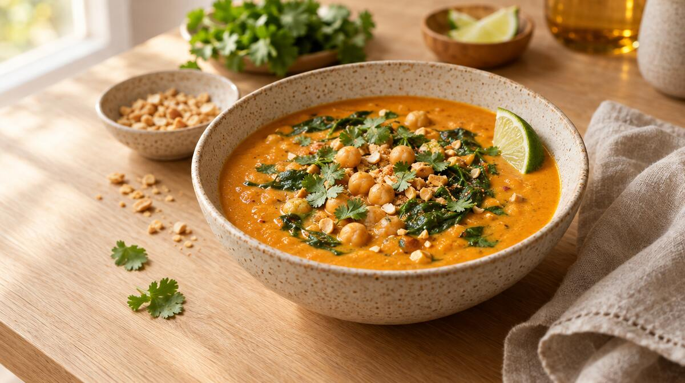
Süßkartoffel bringt Ballaststoffe und Beta-Carotin, Kichererbsen und Erdnussmus liefern pflanzliches Eiweiß. Cremig und mild – angenehm, wenn der Appetit noch durcheinander ist.
Zwiebel, Knoblauch und Ingwer fein hacken. Süßkartoffeln schälen und in 2-cm-Würfel schneiden.
Öl erhitzen, Zwiebel 3 Minuten glasig dünsten. Knoblauch, Ingwer und Kreuzkümmel 1 Minute mitrösten.
Süßkartoffeln, Tomaten und Brühe zugeben, aufkochen und zugedeckt 20 Minuten köcheln, bis die Süßkartoffel weich ist.
Erdnussmus einrühren, die Hälfte der Suppe pürieren und zurückgießen. Abgespülte Kichererbsen 5 Minuten mitköcheln.
Spinat unterrühren, bis er zusammenfällt. Mit Limettensaft und Salz abschmecken.
Abgekühlt in flache Dosen oder Beutel (je 1 Portion) füllen. Bis zu 3 Monate haltbar. Den Spinat kannst du auch erst beim Aufwärmen frisch dazugeben.
Über Nacht im Kühlschrank auftauen. Im Topf unter Rühren erhitzen, bis die Suppe überall dampfend heiß ist; bei Bedarf einen Schuss Wasser zugeben.
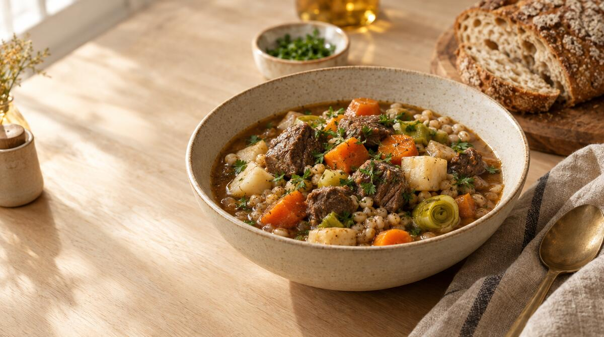
Rindfleisch ist eine gute Quelle für gut verfügbares Eisen und Eiweiß – beides braucht der Körper nach einer Geburt. Graupen machen lange satt und geben dem Eintopf eine sämige Bindung.
Fleisch in kleine Würfel (ca. 2 cm) schneiden. Zwiebel würfeln, Möhren und Sellerie schälen und würfeln, Lauch gründlich waschen und in Ringe schneiden.
Öl im großen Topf erhitzen, das Fleisch portionsweise kräftig anbraten. Zwiebel 3 Minuten mitbraten.
Brühe und Lorbeer zugeben und zugedeckt 60 Minuten leise köcheln lassen.
Graupen, Möhren, Sellerie und Lauch zugeben und weitere 30 Minuten garen, bis Fleisch und Graupen weich sind.
Lorbeer entfernen, mit Salz und Pfeffer abschmecken, Petersilie hacken und unterrühren.
Graupen quellen beim Stehen nach: vor dem Einfrieren etwas mehr Flüssigkeit zugeben. Portionsweise bis zu 3 Monate.
Im Kühlschrank auftauen, mit etwas Wasser im Topf aufkochen und 2 Minuten sprudelnd köcheln lassen.
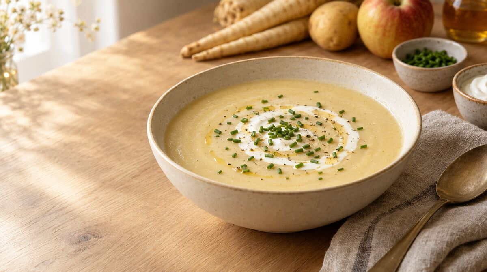
Weich, mild und leicht süßlich – eine Suppe, die auch dann schmeckt, wenn man eigentlich zu müde zum Essen ist. Kartoffel und Pastinake liefern Energie und Kalium.
Zwiebel würfeln. Pastinaken, Kartoffeln und Apfel schälen und klein schneiden.
Butter zerlassen, Zwiebel 3 Minuten dünsten, Gemüse und Apfel kurz mitdünsten.
Mit Brühe auffüllen und zugedeckt 20 Minuten weich kochen.
Fein pürieren, Schmand einrühren und mit Salz, Pfeffer und Muskat abschmecken.
Zum Servieren Schnittlauch darüberstreuen (nicht mit einfrieren).
Püriert friert die Suppe sehr gut ein, die Kartoffel wird nicht mehlig. In Einzelportionen bis zu 3 Monate.
Auftauen, kräftig aufrühren (Schmand kann sich leicht absetzen) und dampfend heiß erhitzen.
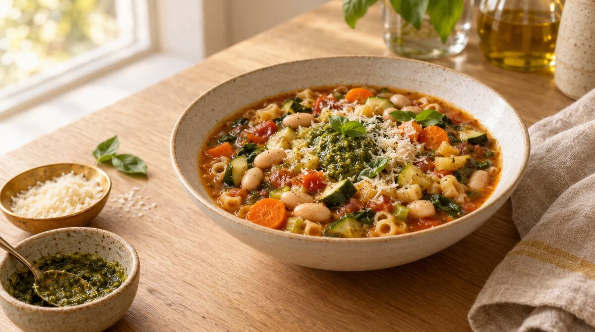
Viel Gemüse und Hülsenfrüchte in einem Topf: Ballaststoffe unterstützen eine normale Verdauung, die nach der Geburt oft erst wieder in Schwung kommen muss.
Zwiebel, Knoblauch, Möhren, Sellerie und Zucchini in kleine Würfel schneiden.
Öl erhitzen, Zwiebel, Möhren und Sellerie 5 Minuten anschwitzen, Knoblauch und Kräuter 1 Minute mitdünsten.
Tomaten und Brühe zugeben, 15 Minuten köcheln.
Zucchini, grüne Bohnen und abgespülte weiße Bohnen zugeben, weitere 10 Minuten garen.
Mit Salz und Pfeffer abschmecken. Nudeln nicht mit einfrieren – beim Aufwärmen frisch dazugeben.
Ohne Nudeln einfrieren, sonst werden sie weich. In Portionen bis zu 3 Monate.
Auftauen, aufkochen und eine Handvoll kleine Nudeln darin 8 Minuten garen. Nach Wunsch mit Pesto und Parmesan servieren.
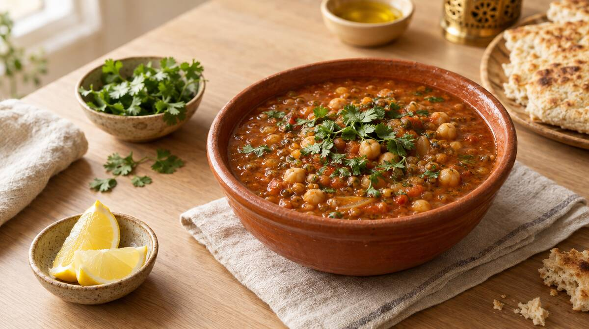
Linsen gehören zu den eisenreichsten pflanzlichen Lebensmitteln; der Zitronensaft liefert Vitamin C, das die Aufnahme von Eisen aus Pflanzen verbessert. Zimt und Kreuzkümmel wärmen, ohne scharf zu sein.
Zwiebeln und Knoblauch fein würfeln, Linsen in einem Sieb abspülen.
Öl erhitzen, Zwiebeln 5 Minuten weich dünsten. Knoblauch und Gewürze 1 Minute mitrösten.
Linsen, Tomaten und Brühe zugeben und zugedeckt 30 Minuten köcheln, bis die Linsen weich sind.
Abgespülte Kichererbsen zugeben und 5 Minuten mitkochen.
Mit Zitronensaft, Salz und Pfeffer abschmecken, Kräuter hacken und darüberstreuen.
Sehr gut geeignet. In Portionen bis zu 3 Monate. Kräuter erst frisch dazugeben.
Auftauen, mit einem Schuss Wasser erhitzen, bis der Eintopf überall dampft. Dazu passt Fladenbrot.
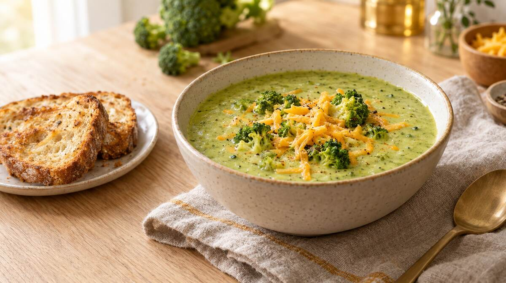
Brokkoli liefert Folat und Vitamin C, Käse und Milch steuern Calcium und Eiweiß bei. Eine grüne Suppe, die nach Wohlfühlessen schmeckt.
Zwiebel würfeln, Brokkoli in Röschen teilen, den Strunk schälen und würfeln. Kartoffeln schälen und klein schneiden.
Butter zerlassen, Zwiebel 3 Minuten dünsten.
Kartoffeln, Brokkoli und Brühe zugeben und 15 Minuten weich kochen.
Fein pürieren, Milch und Käse einrühren, bis der Käse geschmolzen ist.
Mit Salz, Pfeffer und etwas Muskat abschmecken.
Püriert gut einfrierbar, bis zu 3 Monate. Ein paar Röschen kannst du vorher herausnehmen und als Einlage separat einfrieren.
Auftauen, unter Rühren langsam erhitzen und kurz aufkochen lassen. Ist sie zu dick, etwas Milch zugeben.
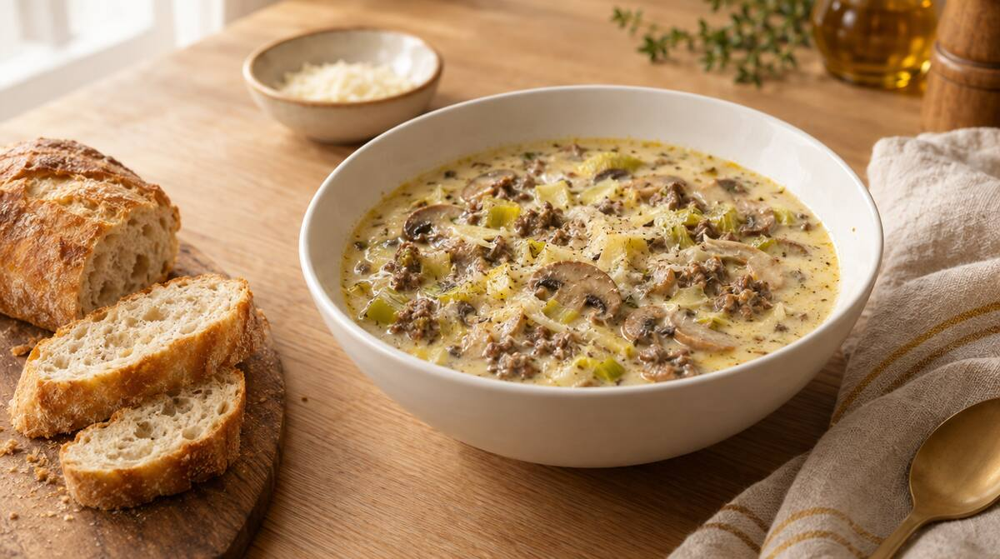
Ein Klassiker, den fast alle mögen – ideal auch, wenn Besuch mitisst. Hackfleisch liefert Eiweiß und Eisen, Lauch bringt Ballaststoffe und Würze.
Lauch längs halbieren, gründlich waschen und in Ringe schneiden. Zwiebel würfeln, Champignons in Scheiben schneiden.
Öl erhitzen, Hackfleisch krümelig und vollständig durchbraten. Zwiebel 2 Minuten mitbraten.
Lauch und Champignons zugeben und 5 Minuten dünsten.
Brühe angießen und 10 Minuten köcheln. Schmelzkäse einrühren, bis er sich gelöst hat.
Mit Salz, Pfeffer und Muskat abschmecken.
Friert gut ein, der Käse bindet. Bis zu 3 Monate.
Auftauen und unter Rühren erhitzen, bis die Suppe sprudelnd kocht. Dazu Baguette oder Brötchen (F06).
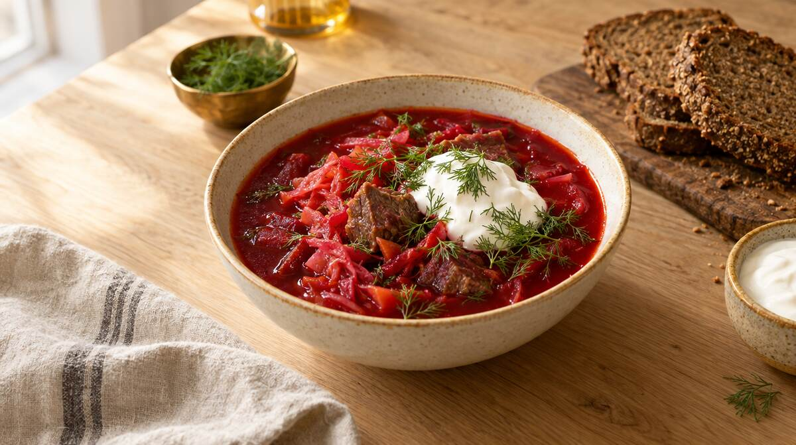
Rote Bete liefert Folat, Rindfleisch Eisen und Eiweiß – eine farbstarke Kombination für Tage, an denen du dich ausgelaugt fühlst. Die säuerliche Note macht den Eintopf frisch statt schwer.
Fleisch in kleine Würfel schneiden. Zwiebel würfeln. Rote Bete (mit Handschuhen) und Möhren schälen und raspeln, Kohl fein schneiden, Kartoffeln würfeln.
Öl erhitzen, Fleisch rundum anbraten, Zwiebel und Tomatenmark 2 Minuten mitrösten.
Brühe angießen und zugedeckt 45 Minuten köcheln.
Rote Bete, Möhren, Kohl und Kartoffeln zugeben und weitere 20 Minuten garen.
Mit Essig, Salz und Pfeffer abschmecken. Saure Sahne und Dill erst beim Servieren dazugeben.
Ohne saure Sahne einfrieren. Die Kartoffeln werden etwas weicher, der Geschmack bleibt. Bis zu 3 Monate.
Auftauen, aufkochen und 2 Minuten sprudelnd kochen. Mit einem Klecks saurer Sahne und Dill servieren.
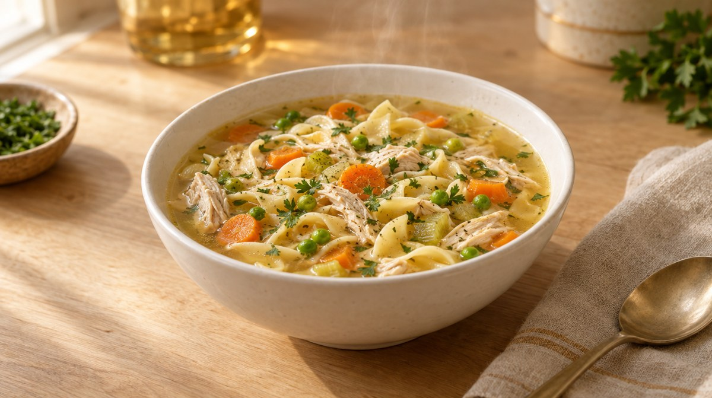
Warme Hühnersuppe ist leicht verdaulich, wärmt von innen und liefert Flüssigkeit, Eiweiß und Salz – gut an Tagen, an denen viel Kraft ins Stillen geht.
Suppengrün putzen und in mundgerechte Stücke schneiden. Zwiebel halbieren.
Hähnchenkeulen mit Zwiebel, Lorbeer, Pfefferkörnern und Wasser aufkochen, Schaum abschöpfen und 45 Minuten leise köcheln lassen.
Keulen herausnehmen, Brühe durch ein Sieb gießen. Fleisch von Haut und Knochen lösen und zerzupfen.
Suppengrün in der Brühe 10 Minuten garen. Fleisch zurück in den Topf geben, salzen.
Für den sofortigen Verzehr Nudeln und Erbsen 8 Minuten mitkochen. Petersilie hacken und darüberstreuen.
Ohne Nudeln einfrieren, sonst werden sie weich. Portionsweise bis zu 3 Monate. Nudeln beim Aufwärmen frisch hineinkochen.
Gefroren im Topf langsam erhitzen, Nudeln und Erbsen zugeben und 8 Minuten sprudelnd kochen, bis alles durchgegart ist.
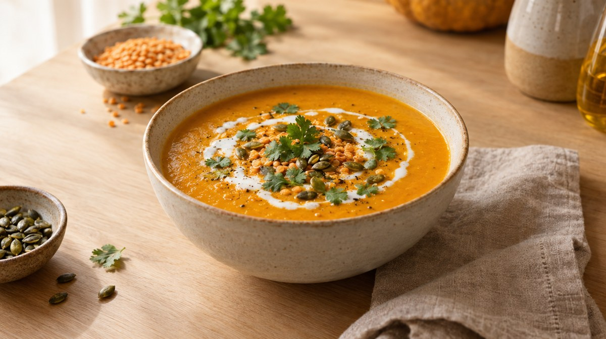
Rote Linsen liefern Eiweiß und Eisen, Kürbis Beta-Carotin. Die Suppe ist in 35 Minuten fertig und braucht kein Einweichen – ideal für den ersten Kochtag.
Kürbis waschen, entkernen und mit Schale würfeln. Zwiebel und Ingwer fein hacken.
Öl erhitzen, Zwiebel und Ingwer 3 Minuten andünsten, Curry 1 Minute mitrösten.
Kürbis, abgespülte Linsen und Brühe zugeben, aufkochen und 20 Minuten köcheln.
Kokosmilch einrühren und alles fein pürieren.
Mit Limettensaft und Salz abschmecken.
Abgekühlt flach in Beuteln einfrieren, bis zu 3 Monate.
Über Nacht im Kühlschrank auftauen oder gefroren im Topf mit einem Schuss Wasser erhitzen, bis die Suppe überall kocht.
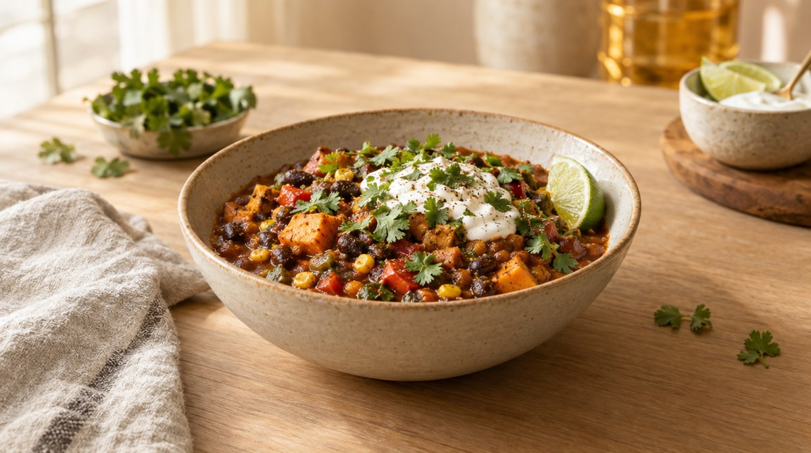
Bohnen bringen Ballaststoffe, Eiweiß und Eisen; mild gewürzt ist das Chili auch für empfindliche Mägen gut verträglich. Schärfe kann jede:r am Tisch selbst nachlegen.
Zwiebel und Knoblauch hacken, Paprika und Süßkartoffel in kleine Würfel schneiden.
Öl erhitzen, Zwiebel 3 Minuten dünsten, Knoblauch und Gewürze 1 Minute mitrösten.
Paprika, Süßkartoffel und Tomaten zugeben, zugedeckt 20 Minuten köcheln.
Abgespülte Bohnen und Mais zugeben und 10 Minuten weiterköcheln, bis die Süßkartoffel weich ist.
Mit Salz abschmecken. Dazu passen Reis, Joghurt oder Avocado.
Portionsweise bis zu 3 Monate. Reis getrennt frisch kochen.
Im Kühlschrank auftauen, im Topf unter Rühren erhitzen, bis es überall blubbert.
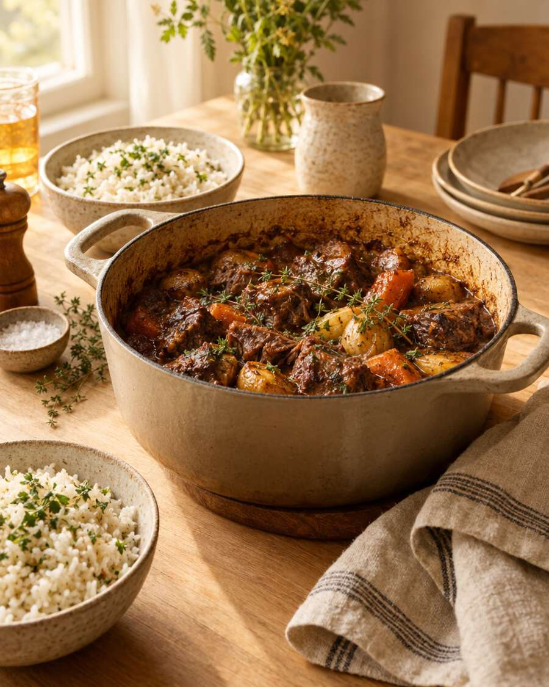
Lange geschmort schmeckt am zweiten Tag – und nach dem Auftauen – oft noch besser.
Lange geschmort schmeckt am zweiten Tag – und nach dem Auftauen – oft noch besser. Zeiten sind Richtwerte; Zutaten, Zubereitung und Einfrier-Hinweise stehen beim Rezept.
Joghurt macht das Fleisch zart und das Curry mild – es ist würzig, aber nicht scharf. Hähnchen liefert reichlich Eiweiß, Erbsen bringen zusätzlich Ballaststoffe.
Hähnchen in mundgerechte Stücke schneiden, mit Joghurt, der Hälfte Garam Masala und Kurkuma mischen und 15 Minuten ziehen lassen.
Zwiebeln, Knoblauch und Ingwer fein hacken. Butter erhitzen und alles 5 Minuten goldgelb dünsten, Tomatenmark und restliches Garam Masala 1 Minute mitrösten.
Passierte Tomaten zugeben, 5 Minuten köcheln, dann Hähnchen samt Joghurt zugeben.
Zugedeckt 15 Minuten leise köcheln, bis das Fleisch innen nicht mehr rosa ist. Erbsen und Sahne zugeben und 3 Minuten mitkochen.
Mit Salz abschmecken. Reis frisch kochen oder Reis-Portionen (B-Kapitel) nutzen.
Curry ohne Reis portionsweise einfrieren, bis zu 3 Monate. Die Soße kann sich etwas trennen, das ist normal.
Über Nacht auftauen, unter Rühren erhitzen, bis das Curry sprudelnd kocht – dabei verbindet sich die Soße wieder.
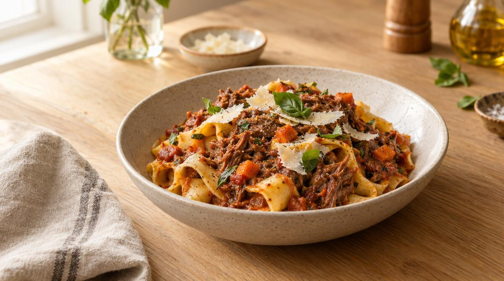
Lange geschmortes Rindfleisch wird butterweich und lässt sich gut essen, auch wenn man nur eine Hand frei hat. Rind ist eine der besten Eisenquellen, das Gemüse steckt unsichtbar in der Soße.
Fleisch in 4 große Stücke schneiden und salzen. Zwiebeln, Möhren, Sellerie und Knoblauch fein würfeln.
Öl im Bräter erhitzen, Fleisch rundum kräftig anbraten und herausnehmen.
Gemüse im Bratfett 8 Minuten weich dünsten, Tomatenmark 1 Minute mitrösten.
Tomaten, Brühe, Lorbeer, Thymian und Fleisch zugeben. Zugedeckt 2 Stunden leise schmoren (oder im Ofen bei 150 °C), bis das Fleisch zerfällt.
Fleisch mit zwei Gabeln zerzupfen, Lorbeer entfernen, Soße abschmecken.
Perfekt zum Einfrieren: in Beuteln flach (je 2 Portionen) bis zu 3 Monate.
Auftauen und erhitzen, bis das Ragù sprudelnd kocht. Mit frisch gekochten Nudeln, Polenta oder Kartoffelpüree servieren.
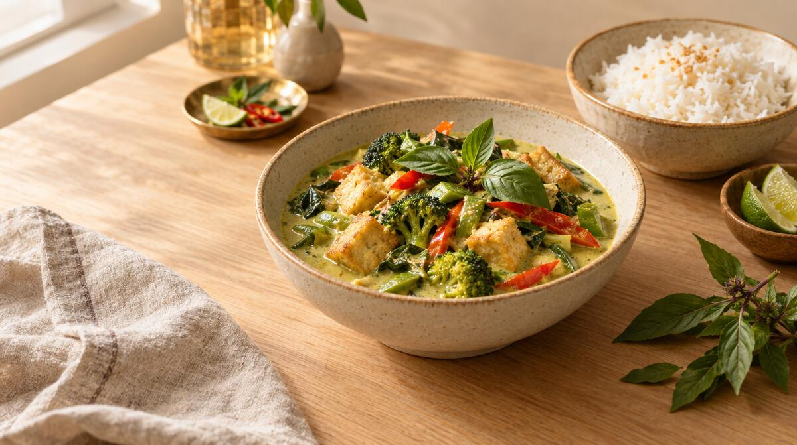
Tofu liefert pflanzliches Eiweiß und Calcium (je nach Herstellung), das Gemüse Vitamin C. Grüne Currypaste in kleiner Menge gibt Aroma ohne große Schärfe – nach Geschmack mehr oder weniger.
Tofu trocken tupfen und würfeln. Zwiebel in Streifen, Paprika in Würfel, Möhren in dünne Scheiben schneiden, Brokkoli in kleine Röschen teilen.
Öl erhitzen, Tofu rundum goldbraun braten und herausnehmen.
Zwiebel 3 Minuten anbraten, Currypaste 1 Minute mitrösten. Kokosmilch und Brühe zugeben und aufkochen.
Möhren 5 Minuten köcheln, dann Brokkoli und Paprika 5 Minuten mitgaren – das Gemüse soll noch Biss haben.
Tofu zurückgeben, mit Sojasauce und Limettensaft abschmecken.
Bis zu 2 Monate. Tofu wird nach dem Einfrieren etwas fester und schwammiger – er saugt dann die Soße besonders gut auf.
Auftauen und erhitzen, bis das Curry kocht. Frischer Reis oder Reis-Portionen passen dazu.
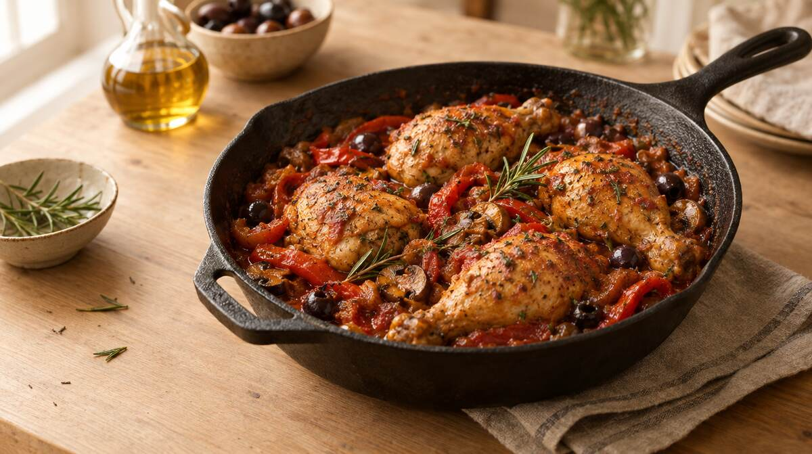
Hähnchenkeulen bleiben beim Schmoren saftig und vertragen das Einfrieren besser als Brustfilet. Paprika liefert viel Vitamin C, Oliven geben Würze ohne Aufwand.
Hähnchen salzen. Zwiebel und Paprika in Streifen schneiden, Knoblauch hacken, Champignons vierteln.
Öl im Bräter erhitzen, Hähnchen rundum goldbraun anbraten und herausnehmen.
Zwiebel, Paprika und Pilze 5 Minuten braten, Knoblauch und Rosmarin 1 Minute mitbraten.
Tomaten, Brühe und Oliven zugeben, Hähnchen hineinlegen und zugedeckt 35 Minuten schmoren, bis sich das Fleisch leicht vom Knochen löst.
Gargrad an der dicksten Stelle prüfen (mindestens 2 Minuten über 70 °C). Mit Salz und Pfeffer abschmecken.
Fleisch vom Knochen lösen und mit der Soße einfrieren – so isst es sich später mit einer Hand. Bis zu 3 Monate.
Auftauen, zugedeckt erhitzen, bis alles sprudelnd kocht. Mit Brot, Reis oder Polenta.
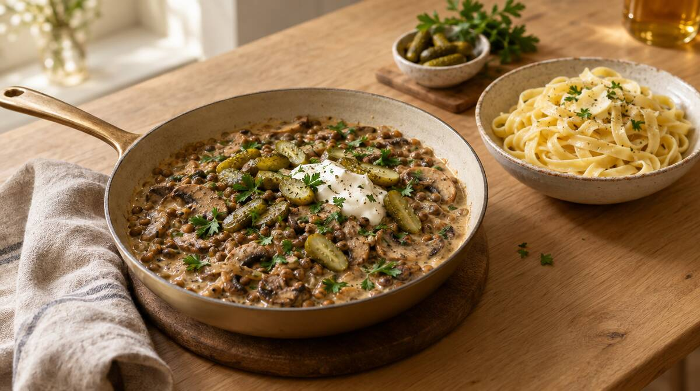
Pilze und Linsen geben herzhaften, fleischigen Geschmack ganz ohne Fleisch. Linsen liefern Eisen, Eiweiß und Ballaststoffe – und machen lange satt.
Zwiebeln in Streifen, Champignons in Scheiben schneiden, Knoblauch hacken, Linsen abspülen.
Öl erhitzen, Pilze in zwei Portionen kräftig braun anbraten. Zwiebeln und Knoblauch 3 Minuten mitbraten.
Paprikapulver und Tomatenmark kurz mitrösten, Linsen und Brühe zugeben.
Zugedeckt 25 Minuten köcheln, bis die Linsen weich sind. Senf und gewürfelte Gewürzgurken unterrühren.
Mit Salz und Pfeffer abschmecken. Schmand und Petersilie erst beim Servieren unterziehen.
Ohne Schmand bis zu 3 Monate einfrieren.
Auftauen, erhitzen bis es sprudelt, dann Schmand unterziehen. Dazu Kartoffelpüree, Reis oder Bandnudeln.
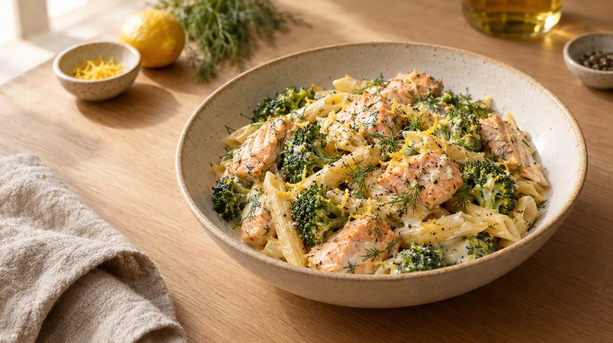
Für Stillende wird 1–2-mal pro Woche Fisch empfohlen, davon einmal fettreicher Seefisch wie Lachs – er liefert Omega-3-Fettsäuren (DHA) und Jod. In Soße eingefroren hast du Fisch-Tage ohne Einkauf.
Lachs in 2-cm-Würfel schneiden, Brokkoli in kleine Röschen teilen, Zwiebel fein würfeln.
Butter zerlassen, Zwiebel 3 Minuten dünsten, Mehl darüberstäuben und kurz anschwitzen.
Milch unter Rühren angießen, aufkochen, Frischkäse einrühren und 2 Minuten köcheln.
Brokkoli 4 Minuten in der Soße garen, dann Lachs zugeben und bei kleiner Hitze 5 Minuten gar ziehen lassen, bis er innen nicht mehr glasig ist.
Mit Zitronenabrieb, etwas Saft, Salz und Dill abschmecken.
Ohne Nudeln, gut abgekühlt in Portionen einfrieren. Fischgerichte bis zu 2 Monate.
Im Kühlschrank auftauen und am selben Tag verbrauchen. Langsam unter Rühren erhitzen, bis die Soße kocht. Mit frischen Nudeln.
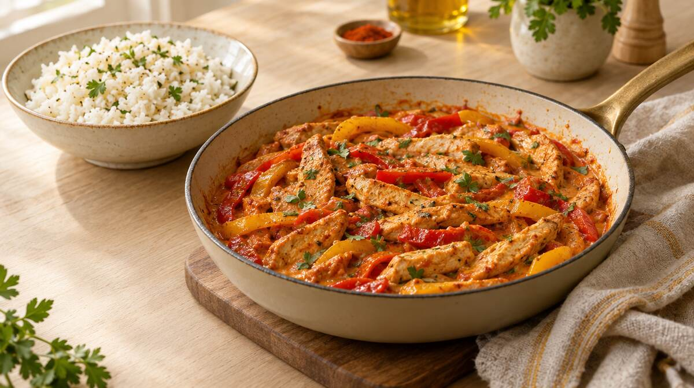
Mageres Putenfleisch liefert viel Eiweiß, die bunte Paprika eine Extraportion Vitamin C. Schnell gemacht und bei Kindern wie Erwachsenen beliebt.
Putenbrust in dünne Streifen schneiden. Zwiebel und Paprika in Streifen schneiden.
Öl erhitzen, Fleisch in zwei Portionen rundum anbraten und herausnehmen.
Zwiebel und Paprika 5 Minuten braten, Paprikapulver und Tomatenmark kurz mitrösten.
Passierte Tomaten, Sahne und Oregano zugeben, 5 Minuten köcheln.
Fleisch zurückgeben und 3 Minuten mitköcheln, bis es vollständig durchgegart ist. Abschmecken.
Bis zu 3 Monate. Reis oder Nudeln getrennt einfrieren oder frisch kochen.
Auftauen und unter Rühren erhitzen, bis die Soße sprudelnd kocht.
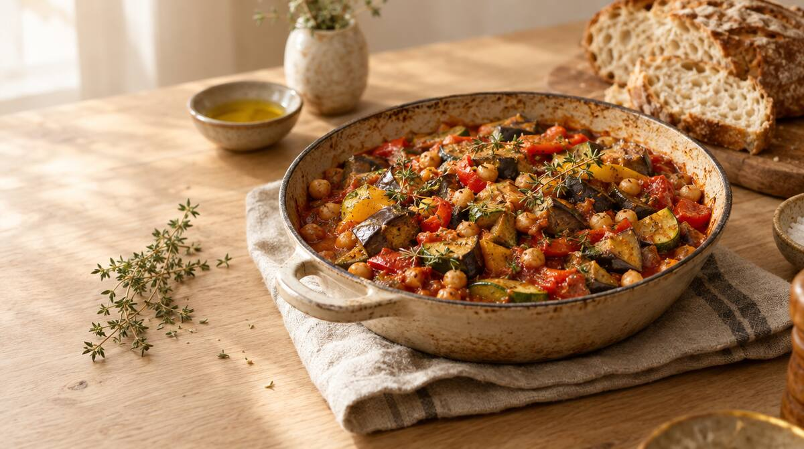
Ein ganzer Gemüsegarten in einem Topf, dazu Kichererbsen für Eiweiß und Sättigung. Schmeckt warm, lauwarm und auf Brot – flexibel für jeden Tag.
Gemüse in 2-cm-Würfel schneiden, Knoblauch hacken.
Aubergine im heißen Öl 5 Minuten anbraten, dann Zwiebeln, Paprika und Zucchini zugeben und weitere 5 Minuten braten.
Knoblauch und Kräuter kurz mitbraten, Tomaten zugeben.
Zugedeckt 25 Minuten köcheln. Abgespülte Kichererbsen zugeben und 5 Minuten mitgaren.
Mit Salz und Pfeffer abschmecken.
Sehr gut geeignet, bis zu 3 Monate.
Auftauen und erhitzen. Passt zu Couscous, Reis, Polenta oder mit Feta überbacken.
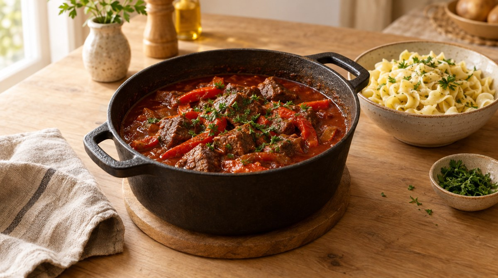
Rindfleisch liefert gut verfügbares Eisen und Zink – nach dem Blutverlust der Geburt besonders wertvoll. Paprika bringt Vitamin C, das die Eisenaufnahme unterstützt.
Zwiebeln in Streifen, Paprika in Würfel schneiden.
Öl erhitzen, Fleisch portionsweise kräftig anbraten und herausnehmen.
Zwiebeln im Bratfett 8 Minuten goldbraun braten, Tomatenmark und Paprikapulver kurz mitrösten.
Fleisch, Brühe, Kümmel und Majoran zugeben, zugedeckt 75 Minuten schmoren.
Paprika zugeben und 20 Minuten weiterschmoren, bis das Fleisch zart ist. Abschmecken.
Portionsweise bis zu 3 Monate. Schmeckt aufgetaut oft noch besser.
Im Kühlschrank auftauen, im Topf langsam erhitzen und 2 Minuten köcheln lassen. Dazu Nudeln, Kartoffeln oder Brot.
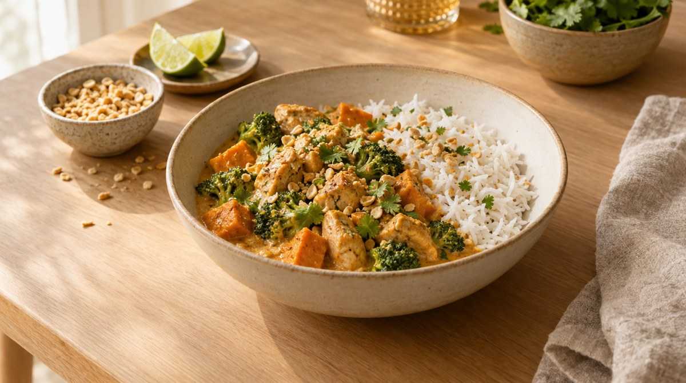
Hähnchen und Erdnuss liefern reichlich Eiweiß, Süßkartoffel und Brokkoli Ballaststoffe und Vitamine. Cremig, mild und sättigend.
Hähnchen in Würfel schneiden, Süßkartoffel schälen und würfeln, Zwiebel und Ingwer hacken.
Öl erhitzen, Hähnchen rundum anbraten, bis es außen hell ist. Zwiebel, Ingwer und Curry 2 Minuten mitbraten.
Süßkartoffel, Kokosmilch, Brühe und Erdnussmus zugeben, 15 Minuten köcheln.
Brokkoli zugeben und weitere 6 Minuten garen, bis Hähnchen und Süßkartoffel durch sind.
Mit Limettensaft und Salz abschmecken.
Ohne Reis bis zu 3 Monate einfrieren.
Im Kühlschrank auftauen und im Topf erhitzen, bis das Hähnchen innen dampfend heiß ist.
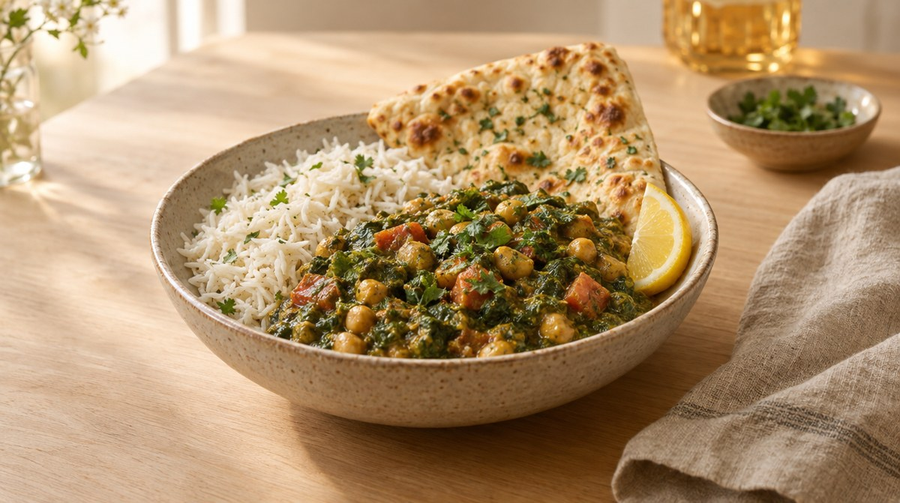
Kichererbsen und Spinat liefern pflanzliches Eisen und Folat, Zitrone und Tomate das Vitamin C dazu. Fast nur Vorratszutaten – perfekt für einen spontanen Kochtag.
Zwiebel, Knoblauch und Ingwer fein hacken.
Öl erhitzen, Zwiebel 4 Minuten dünsten, Knoblauch, Ingwer und Garam Masala 1 Minute mitrösten.
Tomaten, abgespülte Kichererbsen und Kokosmilch zugeben, 10 Minuten köcheln.
Spinat zugeben und unter Rühren 8 Minuten erhitzen, bis er aufgetaut und heiß ist.
Mit Zitronensaft und Salz abschmecken.
Portionsweise bis zu 3 Monate.
Im Kühlschrank auftauen, im Topf erhitzen. Dazu Reis oder Naan.
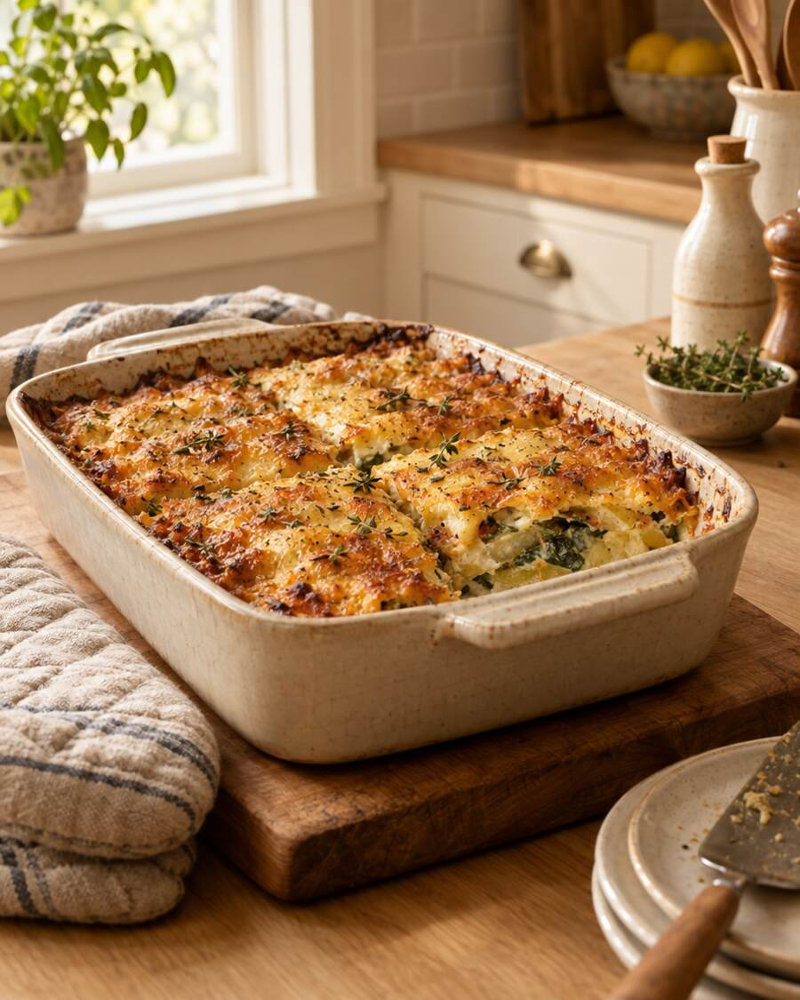
Einmal schichten, in Portionen schneiden, fertig ist ein ganzes Abendessen.
Einmal schichten, in Portionen schneiden, fertig ist ein ganzes Abendessen. Zeiten sind Richtwerte; Zutaten, Zubereitung und Einfrier-Hinweise stehen beim Rezept.
Alles in einer Form: Fleisch, Gemüse und eine süßliche Haube, die nach Kindheit schmeckt. Rinderhack liefert Eisen, Süßkartoffel Beta-Carotin.
Süßkartoffeln schälen, würfeln und in Salzwasser 15 Minuten weich kochen. Abgießen, mit Butter zerstampfen und salzen.
Zwiebel und Möhren fein würfeln. Öl erhitzen, Hack krümelig und vollständig durchbraten, Gemüse 5 Minuten mitbraten.
Tomatenmark kurz mitrösten, Brühe und Worcestershiresauce zugeben, 10 Minuten einkochen. Erbsen unterrühren.
Fleisch in eine Auflaufform (oder 2 kleine) geben, Süßkartoffelpüree darauf verstreichen und mit Käse bestreuen.
Bei 200 °C (Ober-/Unterhitze) 25 Minuten goldbraun backen.
Am besten ungebacken in Alu- oder Glasformen einfrieren. Oder gebacken in Portionen schneiden. Bis zu 3 Monate.
Über Nacht auftauen, abgedeckt bei 180 °C ca. 30–35 Minuten backen, bis die Mitte dampfend heiß ist (mind. 70 °C).
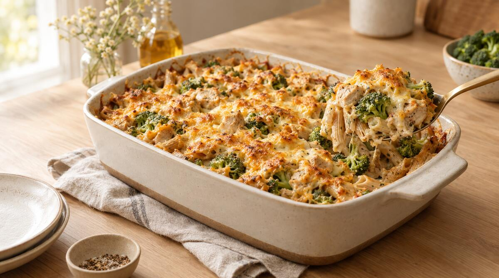
Vollkornnudeln sättigen länger als helle Nudeln, Käse und Milch liefern Calcium, Hähnchen Eiweiß. Ein Auflauf, den man auch halb schlafend genießen kann.
Nudeln 3 Minuten kürzer als angegeben kochen, in den letzten 3 Minuten die Brokkoliröschen mitgaren. Abgießen.
Hähnchen würfeln und im Öl vollständig durchbraten, salzen.
Für die Soße Butter zerlassen, Mehl anschwitzen, Milch unter Rühren angießen und 3 Minuten köcheln. Die Hälfte des Käses einrühren, mit Salz, Pfeffer und Muskat würzen.
Nudeln, Brokkoli, Hähnchen und Soße mischen, in eine Form geben und mit restlichem Käse bestreuen.
Bei 200 °C 20 Minuten goldbraun überbacken.
Etwas mehr Soße einplanen, weil Nudeln nachziehen. In Portionsformen bis zu 3 Monate.
Auftauen, abgedeckt bei 180 °C 25–30 Minuten erhitzen oder portionsweise in der Mikrowelle, bis alles dampft.
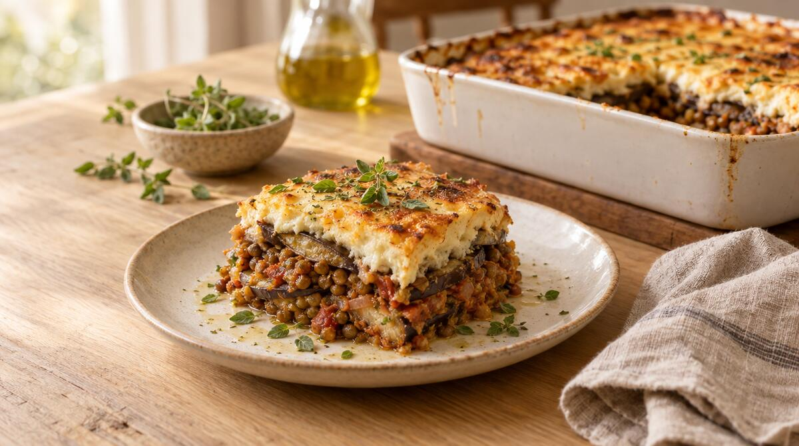
Linsen ersetzen das Hackfleisch und liefern Eisen und Ballaststoffe. Zimt und Oregano geben den typischen griechischen Geschmack – ein Gericht, das nach Urlaub schmeckt.
Auberginen in 1 cm dicke Scheiben schneiden, mit Öl bepinseln und auf dem Blech bei 220 °C 20 Minuten backen.
Zwiebel und Knoblauch hacken, in 1 EL Öl dünsten. Linsen, Tomaten, Brühe, Zimt und Oregano zugeben und 25 Minuten köcheln, bis die Linsen weich sind und die Masse dick ist.
Für die Bechamel Butter zerlassen, Mehl anschwitzen, Milch einrühren, 3 Minuten köcheln. Etwas abkühlen lassen, Ei und Parmesan einrühren.
Abwechselnd Auberginen und Linsen in die Form schichten, mit Bechamel abschließen.
Bei 180 °C 35 Minuten backen, bis die Oberfläche goldbraun und die Mitte heiß ist.
Gebacken und abgekühlt in Stücke schneiden und einzeln einfrieren. Bis zu 3 Monate.
Auftauen, abgedeckt bei 180 °C 25 Minuten erhitzen, bis die Mitte dampfend heiß ist.
Eiweiß aus Huhn und Bohnen, Ballaststoffe aus Bohnen und Mais – und man kann sie fast aus der Hand essen. Mild gewürzt, damit sie der ganzen Familie schmecken.
Hähnchen klein würfeln, Zwiebel und Paprika würfeln.
Öl erhitzen, Hähnchen vollständig durchbraten, Zwiebel und Paprika 4 Minuten mitbraten, Gewürze zugeben.
Abgespülte Bohnen, Mais und 4 EL passierte Tomaten unterrühren, salzen.
Füllung auf die Tortillas verteilen, aufrollen und dicht nebeneinander in eine Form legen. Restliche Tomaten darübergießen, mit Käse bestreuen.
Bei 200 °C 20 Minuten backen.
Ungebacken in der Form oder einzeln eingewickelt einfrieren. Bis zu 3 Monate.
Auftauen, abgedeckt bei 180 °C 25 Minuten backen, die letzten 5 Minuten ohne Abdeckung.
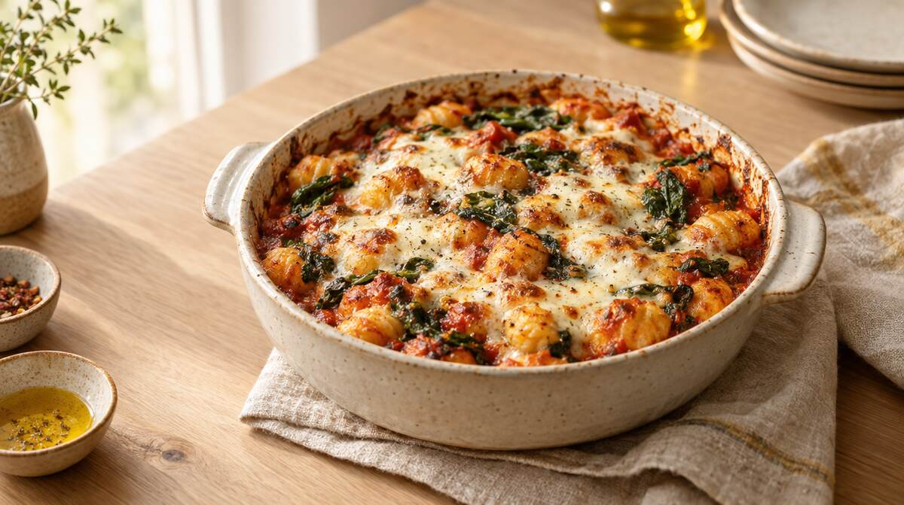
Weich, warm und tröstlich – mit nur 10 Minuten Arbeit. Mozzarella liefert Calcium und Eiweiß, der Spinat Folat.
Zwiebel und Knoblauch hacken und im Öl 3 Minuten dünsten.
Tomaten und Oregano zugeben, 10 Minuten köcheln, salzen und pfeffern. Spinat unterrühren.
Gnocchi roh mit der Soße mischen und in eine Form geben.
Mozzarella zerzupfen und mit Parmesan darüber verteilen.
Bei 200 °C 20 Minuten backen, bis der Käse goldbraun ist.
Ungebacken in Portionsformen bis zu 2 Monate einfrieren.
Gefroren abgedeckt bei 180 °C ca. 40 Minuten backen, die letzten 10 Minuten offen, bis alles dampfend heiß ist.
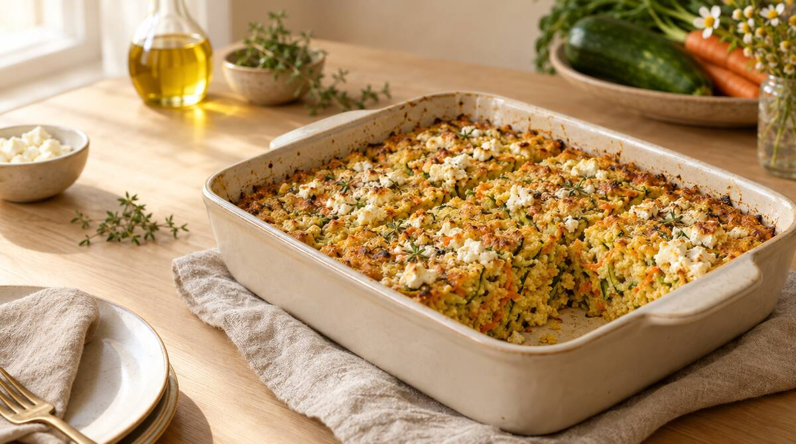
Hirse ist ein glutenfreies Getreide mit Eisen und Magnesium. Mit Eiern, Joghurt und Feta wird daraus ein eiweißreicher Auflauf, der sich gut in Stücke schneiden lässt.
Hirse heiß abspülen, mit Brühe aufkochen und 10 Minuten köcheln, dann 10 Minuten quellen lassen.
Zucchini und Möhren grob raspeln, Paprika fein würfeln.
Eier mit Joghurt, Thymian, Salz und Pfeffer verquirlen. Mit Hirse, Gemüse und der Hälfte des zerbröselten Fetas mischen.
In eine gefettete Form geben, restlichen Feta darüberbröseln.
Bei 180 °C 30 Minuten backen, bis der Auflauf fest und goldbraun ist.
In Stücke geschnitten einzeln einfrieren, bis zu 3 Monate.
Aufgetaut im Ofen bei 180 °C 15 Minuten oder in der Mikrowelle erhitzen, bis die Mitte heiß ist.
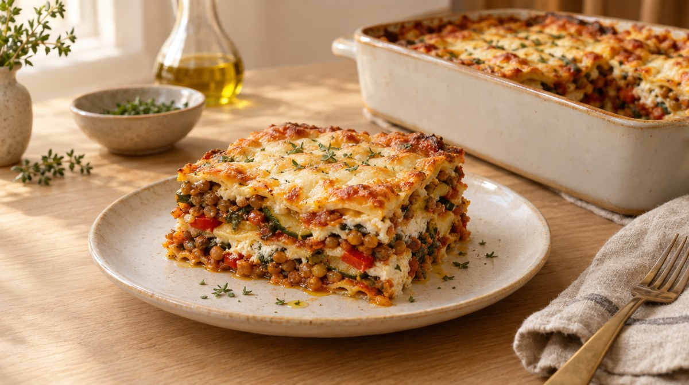
Die Linsen-Bolognese bringt Eiweiß und Eisen ohne Fleisch, Ricotta Calcium. Lasagne lässt sich gut in Stücken einfrieren und einzeln aufwärmen.
Zwiebel, Möhren und Zucchini fein würfeln, in Öl 5 Minuten andünsten.
Linsen, Tomaten, Brühe und Oregano zugeben, 15 Minuten köcheln. Salzen.
Ofen auf 180 °C vorheizen. In eine Form abwechselnd Soße, Lasagneplatten und Ricotta schichten, mit Soße abschließen.
Mit Mozzarella bestreuen und 40 Minuten backen, bis die Platten weich sind.
10 Minuten ruhen lassen, dann in Portionen schneiden.
Ausgekühlt in Portionen schneiden, einzeln verpacken, bis zu 3 Monate.
Im Kühlschrank auftauen, abgedeckt bei 180 °C 25 Minuten backen, bis die Mitte heiß ist.
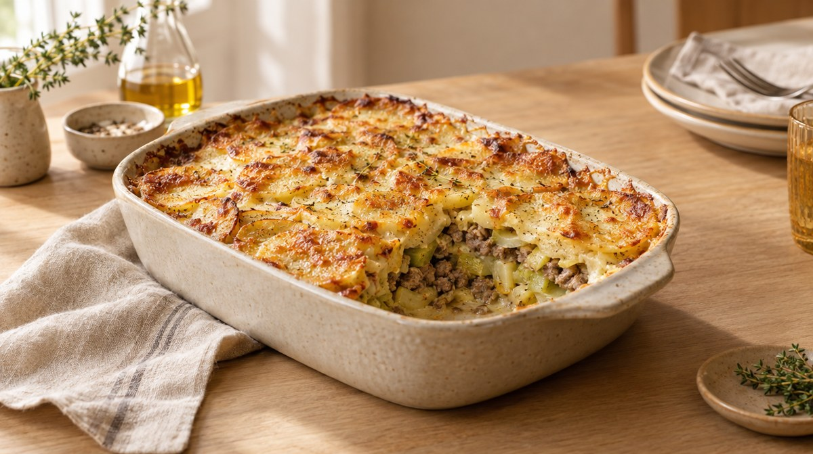
Klassische Hausmannskost, die satt macht: Kartoffeln liefern Energie, Hack und Käse Eiweiß. Viele kennen das Gericht – auch Helfer:innen kochen es gern nach.
Kartoffeln schälen, in dünne Scheiben schneiden und 5 Minuten in Salzwasser vorgaren, abgießen.
Lauch in Ringe schneiden. Hack in Öl krümelig braten, bis es durchgegart ist, Lauch 5 Minuten mitbraten, salzen.
Ofen auf 190 °C vorheizen. Kartoffeln und Hack-Lauch-Mischung in eine Form schichten.
Schmand, Milch und Eier verquirlen, mit Salz, Pfeffer und Muskat würzen und darübergießen.
Mit Käse bestreuen, 30 Minuten backen, bis der Guss gestockt und goldbraun ist.
In Portionen schneiden und bis zu 3 Monate einfrieren.
Im Kühlschrank auftauen, abgedeckt bei 180 °C 25 Minuten erhitzen, bis es innen dampfend heiß ist.
Für Morgen nach kurzen Nächten: aus der Truhe in den Toaster oder Ofen.
Für Morgen nach kurzen Nächten: aus der Truhe in den Toaster oder Ofen. Zeiten sind Richtwerte; Zutaten, Zubereitung und Einfrier-Hinweise stehen beim Rezept.
Quark bringt Eiweiß in den Teig, Vollkornmehl Ballaststoffe – so halten die Muffins länger satt als ein Croissant. Nur leicht mit Honig gesüßt.
Ofen auf 180 °C (Ober-/Unterhitze) vorheizen, Muffinblech mit Papierförmchen auslegen.
Mehl und Backpulver mischen.
Quark, Eier, Öl, Honig, Milch und Zitronenabrieb glatt rühren. Mehl kurz unterheben, nur so lange rühren, bis alles feucht ist.
Blaubeeren (TK-Beeren unaufgetaut) vorsichtig unterheben, Teig auf die Förmchen verteilen.
20–22 Minuten backen, bis ein Holzstäbchen sauber herauskommt.
Vollständig abgekühlt im Gefrierbeutel bis zu 3 Monate.
Bei Raumtemperatur 1–2 Stunden auftauen oder 30 Sekunden in die Mikrowelle. Über Nacht aus der Truhe genommen, sind sie morgens fertig.
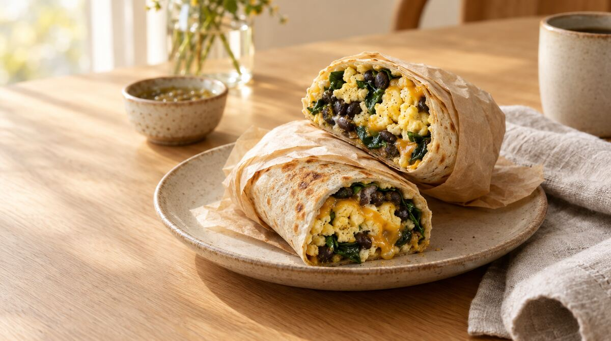
Ein komplettes Frühstück zum Mitnehmen in die Hand: Eier und Bohnen liefern Eiweiß, Spinat Folat, Käse Calcium. Ideal für Morgen, an denen du stillst und gleichzeitig Hunger hast.
Paprika fein würfeln, Bohnen abspülen und abtropfen lassen.
Paprika in Butter 3 Minuten braten. Eier verquirlen, salzen und in die Pfanne geben; unter Rühren vollständig stocken lassen.
Bohnen, Spinat und Paprikapulver unterrühren, bis der Spinat zusammenfällt. Abkühlen lassen.
Füllung und Käse auf die Tortillas verteilen, Seiten einschlagen und fest aufrollen.
Einzeln in Backpapier und Alufolie wickeln.
Gewickelt im Gefrierbeutel bis zu 2 Monate.
Folie entfernen, im Backpapier 2–3 Minuten in der Mikrowelle oder 20 Minuten bei 180 °C im Ofen erhitzen, bis die Mitte heiß ist.
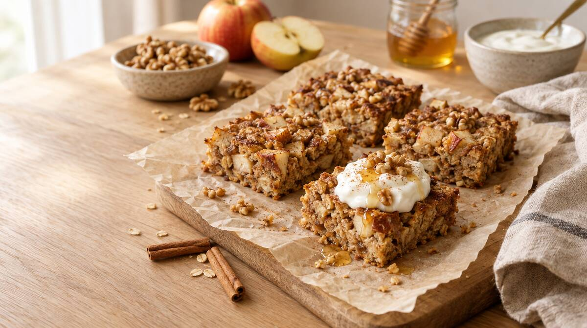
Haferflocken liefern Ballaststoffe, Eisen und Magnesium und halten den Blutzucker stabiler als süßes Gebäck. Schmeckt wie Apfelkuchen, ist aber ein vollwertiges Frühstück.
Ofen auf 180 °C vorheizen, eine Form (ca. 20 × 25 cm) mit Backpapier auslegen.
Bananen zerdrücken, mit Eiern, Milch und Honig verrühren.
Haferflocken, Backpulver, Zimt und Walnüsse unterrühren. Äpfel entkernen, fein würfeln und unterheben.
Masse in die Form streichen.
35 Minuten goldbraun backen, abkühlen lassen und in 8 Stücke schneiden.
Stücke einzeln oder mit Backpapier getrennt einfrieren, bis zu 3 Monate.
Über Nacht im Kühlschrank auftauen; kalt essen oder 40 Sekunden in der Mikrowelle wärmen. Mit Joghurt besonders gut.
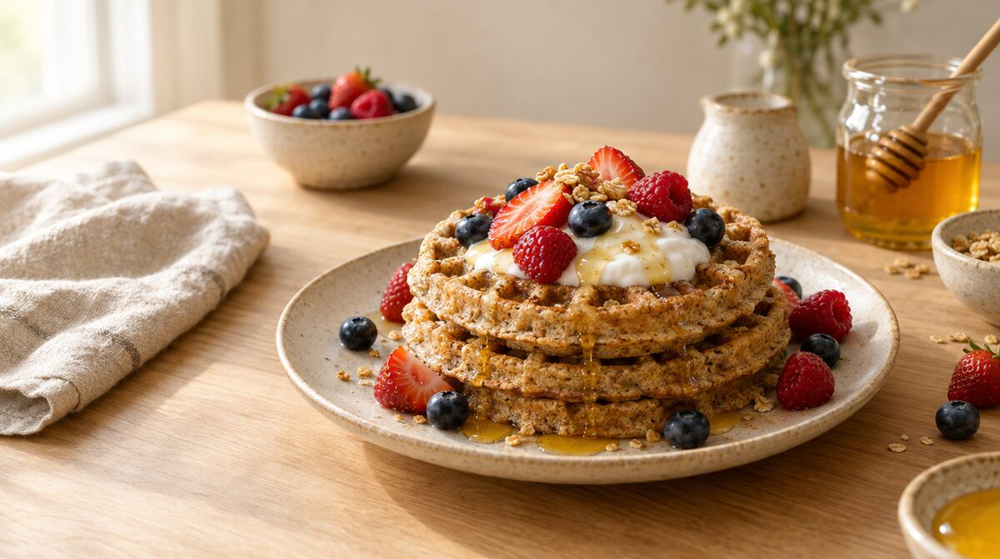
Vollkorn sättigt länger und liefert mehr Ballaststoffe und Mineralstoffe als Weißmehl. Aus der Truhe direkt in den Toaster – schneller geht ein warmes Frühstück nicht.
Mehl, Backpulver und Salz mischen.
Eier, Milch, geschmolzene Butter und Honig verquirlen, mit dem Mehl zu einem glatten Teig verrühren. 10 Minuten quellen lassen.
Waffeleisen aufheizen und leicht fetten.
Pro Waffel eine Kelle Teig goldbraun backen.
Auf einem Gitter vollständig abkühlen lassen, damit sie knusprig bleiben.
Mit Backpapier dazwischen im Beutel bis zu 3 Monate.
Gefroren direkt in den Toaster (2 Durchgänge) oder 5 Minuten bei 200 °C in den Ofen. Mit Quark und Obst oder Kompott (B04).
Herzhaft statt süß: Käse liefert Calcium und Eiweiß, Vollkorn Ballaststoffe. Warm mit Frischkäse und Gurke ein schnelles Frühstück oder Abendbrot.
Ofen auf 200 °C vorheizen, Blech mit Backpapier belegen.
Mehle, Backpulver und ½ TL Salz mischen, kalte Butter in Stückchen zugeben und mit den Fingern zu Bröseln reiben.
Käse und fein geschnittenen Schnittlauch untermischen. Ei mit Buttermilch verquirlen und kurz unterkneten.
Teig 3 cm dick ausdrücken und 10 Kreise ausstechen.
15–18 Minuten goldbraun backen.
Abgekühlt im Beutel bis zu 3 Monate.
Gefroren 8–10 Minuten bei 180 °C aufbacken oder aufgetaut kurz toasten.
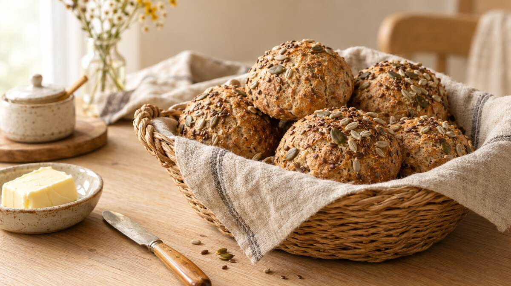
Saaten liefern gesunde Fette, Ballaststoffe und Mineralstoffe. Frische Brötchen aus der Truhe machen jedes Frühstück zu einem kleinen Wochenend-Moment.
Hefe mit Honig im lauwarmen Wasser auflösen.
Mehle, Salz und 70 g Saaten mischen, Hefewasser zugeben und 8 Minuten zu einem weichen Teig kneten.
Zugedeckt 1 Stunde gehen lassen, bis sich der Teig verdoppelt hat.
In 10 Stücke teilen, rund formen, mit Wasser bepinseln und in den restlichen Saaten wälzen. 15 Minuten ruhen lassen.
Bei 220 °C mit einer Schale Wasser im Ofen 18–20 Minuten backen.
Vollständig abgekühlt im Beutel bis zu 3 Monate.
Gefroren mit etwas Wasser besprühen und 8–10 Minuten bei 200 °C aufbacken.
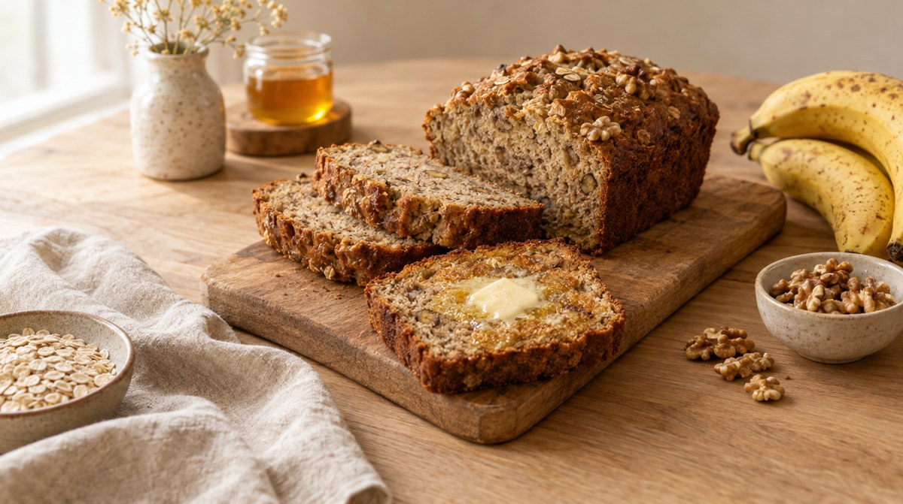
Reife Bananen süßen fast von allein, Vollkorn und Hafer halten lange satt, Walnüsse liefern Omega-3-Fettsäuren. Eine Scheibe geht morgens mit einer Hand.
Ofen auf 175 °C vorheizen, Kastenform mit Backpapier auslegen.
Bananen zerdrücken, mit Eiern, Öl und Ahornsirup verrühren.
Mehl, Haferflocken, Backpulver und Zimt mischen und kurz unterrühren. Gehackte Walnüsse unterheben.
Teig in die Form füllen und 50 Minuten backen (Stäbchenprobe).
Vollständig auskühlen lassen und in Scheiben schneiden.
In Scheiben schneiden, mit Backpapier dazwischen bis zu 3 Monate einfrieren.
Einzelne Scheiben gefroren in den Toaster oder 20 Minuten bei Zimmertemperatur auftauen.
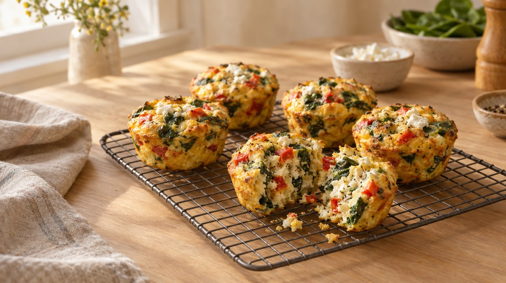
Ein herzhaftes Frühstück mit viel Eiweiß, das sich nach kurzen Nächten in der Mikrowelle aufwärmen lässt. Das Gemüse bringt Folat und Vitamin C.
Ofen auf 180 °C vorheizen, Muffinform mit Öl einfetten oder mit Papierförmchen auslegen.
Spinat grob hacken, Paprika fein würfeln, Frühlingszwiebeln in Ringe schneiden.
Eier und Milch verquirlen, leicht salzen. Gemüse und zerbröselten Feta unterrühren.
Masse auf 12 Mulden verteilen und 20 Minuten backen, bis die Muffins vollständig gestockt sind.
In der Form 5 Minuten abkühlen lassen, dann herauslösen.
Vollständig ausgekühlt einzeln einfrieren, bis zu 2 Monate.
Gefroren 60–90 Sekunden in der Mikrowelle oder 12 Minuten bei 170 °C im Ofen erhitzen, bis sie innen heiß sind.
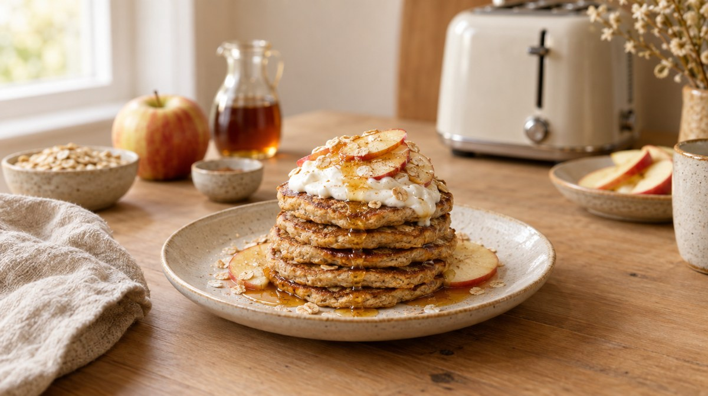
Ohne Zuckerzusatz, mit Hafer für lang anhaltende Energie und Apfel für natürliche Süße. Aus der Truhe direkt in den Toaster – schneller geht Frühstück kaum.
Haferflocken mit Milch im Mixer zu einem dicken Teig mixen.
Eier, Backpulver und Zimt zugeben und kurz weitermixen. Apfel fein raspeln und unterrühren. 5 Minuten quellen lassen.
Eine Pfanne mit wenig Öl erhitzen, je 2 EL Teig hineingeben.
Pancakes je Seite 2–3 Minuten goldbraun backen, bis sie durchgebacken sind.
Auf einem Gitter auskühlen lassen.
Mit Backpapier dazwischen bis zu 3 Monate einfrieren.
Gefroren 2 Durchgänge im Toaster oder 1 Minute je Seite in der Pfanne.
Alles, was du mit einer Hand essen kannst, während die andere das Baby hält.
Alles, was du mit einer Hand essen kannst, während die andere das Baby hält. Zeiten sind Richtwerte; Zutaten, Zubereitung und Einfrier-Hinweise stehen beim Rezept.
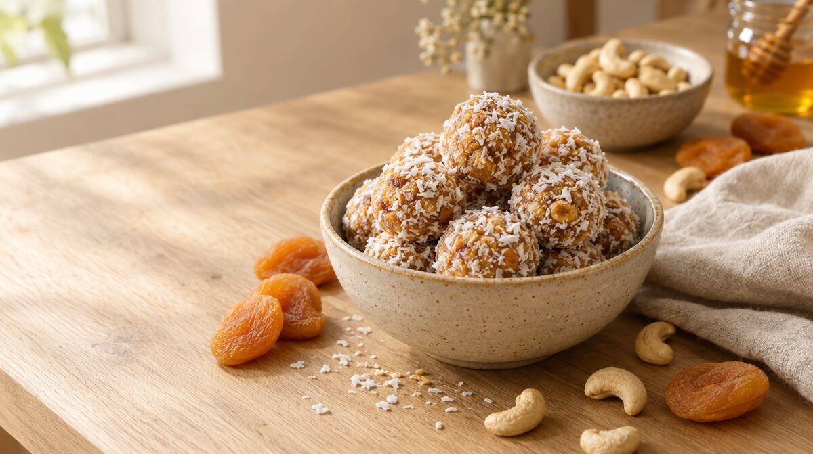
Getrocknete Aprikosen liefern Eisen und Kalium, Cashews Magnesium und gesunde Fette, Hafer Ballaststoffe. Süß ohne Zuckerzusatz – perfekt für den Hunger beim nächtlichen Stillen.
Aprikosen 10 Minuten in warmem Wasser einweichen, gut abtropfen lassen.
Cashews im Mixer grob mahlen.
Aprikosen, Haferflocken, Chiasamen, 1 TL Orangenabrieb und 2 EL Orangensaft zugeben und zu einer formbaren Masse mixen.
Mit feuchten Händen 20 Kugeln formen.
In Kokosraspeln wälzen.
Im Gefrierbeutel bis zu 3 Monate. Sie frieren nicht steinhart.
Direkt aus der Truhe essen oder 10 Minuten antauen lassen. Im Kühlschrank halten sie sich 1 Woche.
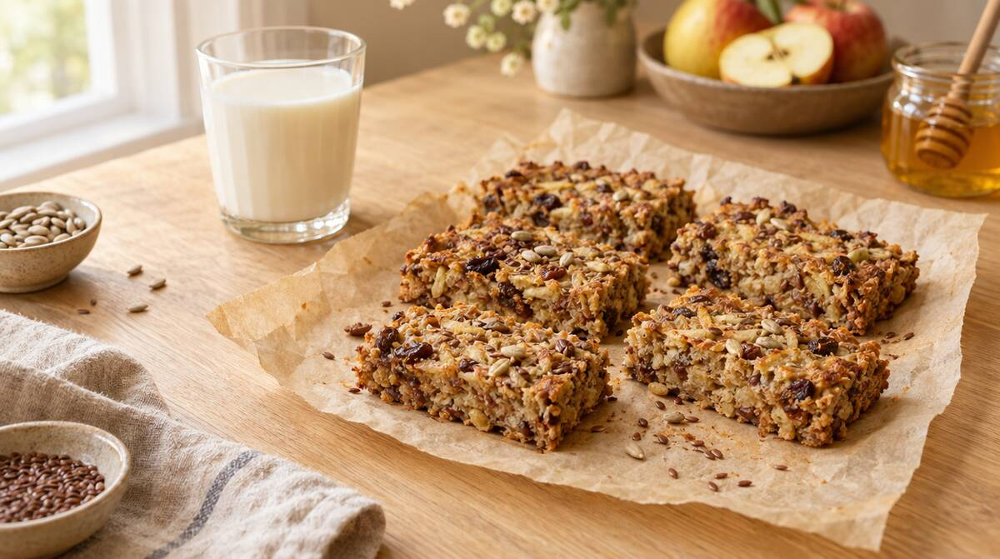
Leinsamen und Hafer liefern viele Ballaststoffe, die eine normale Verdauung unterstützen – nach der Geburt ein häufiges Thema. Dazu Energie, die nicht sofort verpufft.
Ofen auf 180 °C vorheizen, eine Form (20 × 30 cm) mit Backpapier auslegen.
Bananen zerdrücken, Apfel grob raspeln, mit Öl und Honig verrühren.
Haferflocken, Leinsamen, Rosinen, Kerne und Zimt untermischen.
Masse fest in die Form drücken.
25 Minuten backen, in der Form abkühlen lassen und in 16 Riegel schneiden.
Einzeln in Backpapier gewickelt im Beutel bis zu 3 Monate.
30 Minuten bei Raumtemperatur auftauen. Für die Wickeltasche gefroren einpacken – bis zum Hunger sind sie aufgetaut.
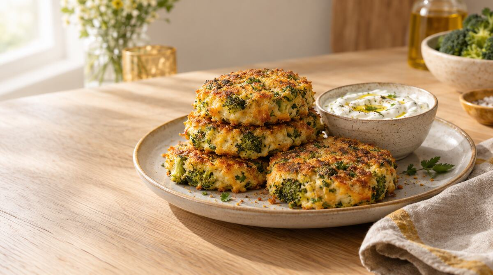
Gemüse, Ei und Käse in einem Bissen – ein herzhafter Snack mit Eiweiß, Calcium und Folat, der warm und kalt schmeckt.
Ofen auf 200 °C vorheizen, Blech mit Backpapier belegen.
Brokkoli in Röschen teilen und 4 Minuten dämpfen oder kochen, gut abtropfen lassen und fein hacken.
Mit Eiern, Käse, Paniermehl, fein geschnittenen Frühlingszwiebeln, Knoblauchpulver, Salz und Pfeffer zu einer formbaren Masse mischen.
16 flache Taler formen und aufs Blech setzen.
20 Minuten backen, nach 12 Minuten wenden.
Abgekühlt einzeln vorfrieren, dann im Beutel bis zu 3 Monate.
Gefroren 10 Minuten bei 200 °C im Ofen oder in der Heißluftfritteuse aufbacken.
Spinat liefert Folat und Feta Calcium. Die Taschen sind ein Klassiker für die Hand: kein Besteck, keine Krümel auf dem Baby.
Spinat auftauen und kräftig ausdrücken. Zwiebel fein würfeln und im Öl 3 Minuten dünsten.
Spinat, Zwiebel und zerbröselten Feta mischen, mit Pfeffer und Muskat würzen (Feta ist salzig).
Blätterteig in je 6 Quadrate schneiden, Füllung daraufgeben, zu Dreiecken falten, Ränder mit einer Gabel andrücken.
Mit verquirltem Ei bestreichen und mit Sesam bestreuen.
Bei 200 °C 20–22 Minuten goldbraun backen.
Gebacken und abgekühlt bis zu 3 Monate. Oder ungebacken einfrieren und direkt gefroren backen.
Gefroren bei 200 °C 10–12 Minuten aufbacken (ungebacken: 25–28 Minuten).
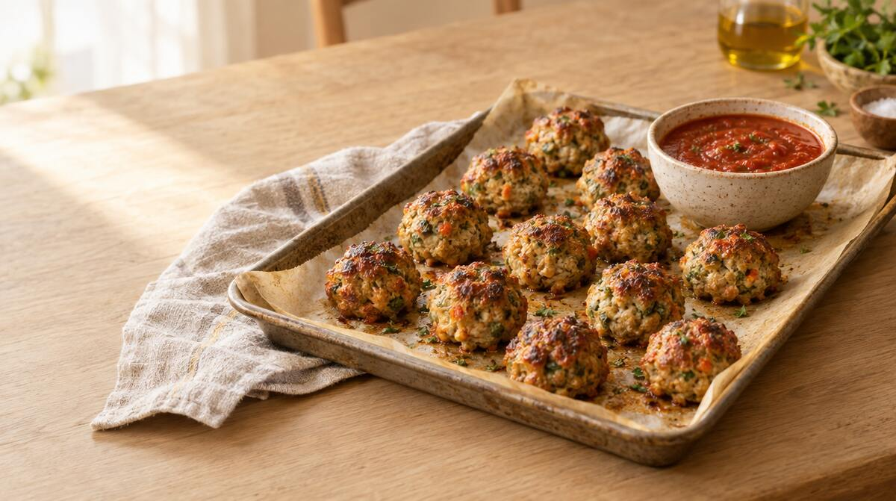
Mageres Geflügel für Eiweiß, verstecktes Gemüse für Vitamine – und klein genug für einen Bissen. Später auch fürs Kind geeignet (dann ohne Salz und Parmesan).
Ofen auf 200 °C vorheizen, Blech mit Backpapier belegen.
Zucchini und Möhre fein raspeln und in einem Tuch gut ausdrücken.
Mit Hack, Haferflocken, Ei, Parmesan, Oregano, Knoblauch, Salz und Pfeffer verkneten.
Mit feuchten Händen 24 Bällchen formen und aufs Blech setzen.
18–20 Minuten backen, bis sie innen nicht mehr rosa sind (mindestens 2 Minuten über 70 °C).
Abgekühlt einzeln vorfrieren, dann im Beutel bis zu 3 Monate.
Gefroren in Tomatensoße (B02) 10 Minuten köcheln oder 12 Minuten bei 200 °C im Ofen aufbacken.
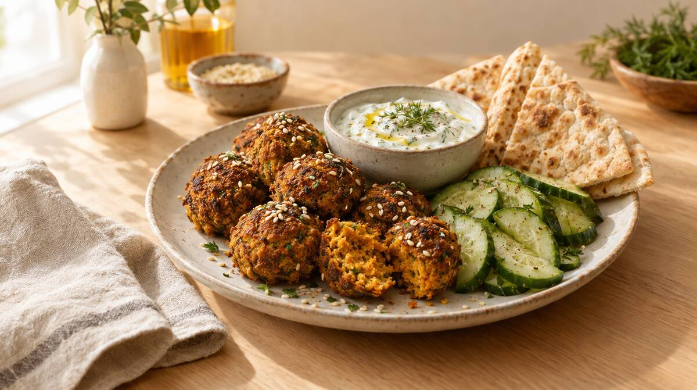
Kichererbsen liefern Eiweiß und Ballaststoffe, Süßkartoffel macht die Falafel saftig, ohne Frittieren. Mit Joghurtdip ein vollwertiger Snack.
Süßkartoffel schälen, würfeln und 12 Minuten weich dämpfen oder kochen, gut abtropfen lassen.
Kichererbsen abspülen und abtropfen lassen.
Süßkartoffel, Kichererbsen, Knoblauch, Gewürze, Petersilie und 1 TL Salz im Mixer grob pürieren, Mehl untermischen.
20 Kugeln formen, leicht flach drücken, mit Öl bepinseln und mit Sesam bestreuen.
Bei 200 °C 25 Minuten backen, nach 15 Minuten wenden.
Abgekühlt bis zu 3 Monate.
Gefroren 10–12 Minuten bei 200 °C aufbacken. Im Fladenbrot mit Gurke und Joghurt eine schnelle Mahlzeit.
Die Banane süßt, Erdnussmus liefert Eiweiß und Magnesium, Hafer Ballaststoffe. Ein Keks für zwischendurch, der wirklich etwas hergibt.
Ofen auf 180 °C vorheizen, Blech mit Backpapier belegen.
Bananen mit einer Gabel fein zerdrücken, Erdnussmus einrühren.
Haferflocken, Zimt und Schokolade untermischen und 5 Minuten quellen lassen.
Mit einem Esslöffel 20 Häufchen aufs Blech setzen und flach drücken.
15 Minuten backen, auf dem Blech abkühlen lassen.
Im Beutel bis zu 3 Monate.
10 Minuten bei Raumtemperatur auftauen oder direkt gefroren knabbern.
Herzhafter Snack mit Eiweiß aus Quark und Käse, ideal für die Hand. Quark-Öl-Teig braucht keine Gehzeit.
Quark, Milch, Öl, Ei und eine Prise Salz verrühren. Mehl und Backpulver unterkneten (Quark-Öl-Teig).
Teig auf Backpapier zu einem Rechteck (ca. 30 × 40 cm) ausrollen.
Tomatenmark mit 2 EL Wasser und Oregano verrühren, aufstreichen. Fein gewürfelte Paprika, Mais und Käse darauf verteilen.
Von der langen Seite aufrollen, in 16 Scheiben schneiden und auf ein Blech legen.
Bei 190 °C 20–25 Minuten goldbraun backen.
Ausgekühlt in Beuteln bis zu 3 Monate.
Gefroren bei 180 °C 10 Minuten aufbacken oder bei Zimmertemperatur 1 Stunde auftauen.
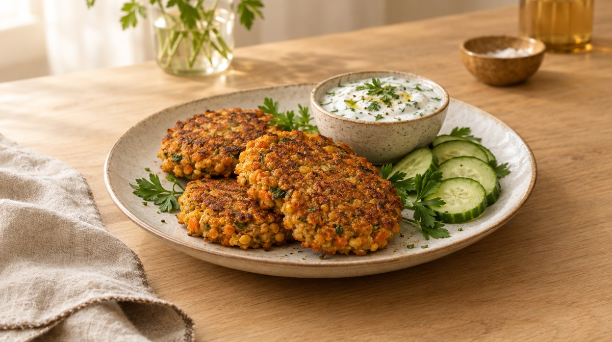
Linsen liefern Eiweiß, Eisen und Ballaststoffe. Die Taler schmecken warm und kalt – mit Joghurt-Dip oder im Brot.
Linsen in 400 ml Wasser 12 Minuten weich kochen, abgießen und abkühlen lassen.
Möhren fein raspeln, Zwiebel und Petersilie fein hacken.
Linsen, Möhren, Zwiebel, Eier, Haferflocken, Kreuzkümmel und Petersilie vermengen, salzen und 10 Minuten quellen lassen.
Mit feuchten Händen 14 flache Taler formen.
In Öl je Seite 4 Minuten goldbraun braten, bis sie durchgegart sind.
Ausgekühlt mit Backpapier dazwischen bis zu 3 Monate.
Gefroren bei 180 °C 12 Minuten aufbacken oder in der Pfanne je Seite 3 Minuten erhitzen.
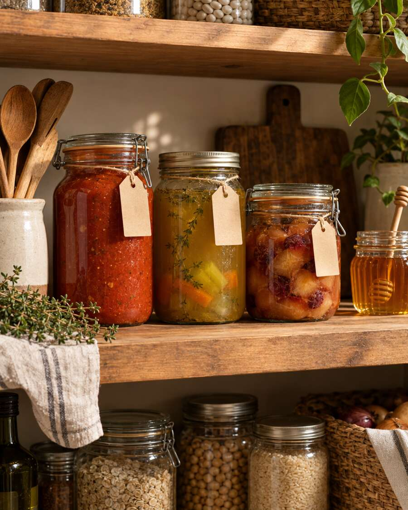
Brühe, Soße, Kompott: Bausteine, aus denen in 10 Minuten eine Mahlzeit wird.
Brühe, Soße, Kompott: Bausteine, aus denen in 10 Minuten eine Mahlzeit wird. Zeiten sind Richtwerte; Zutaten, Zubereitung und Einfrier-Hinweise stehen beim Rezept.
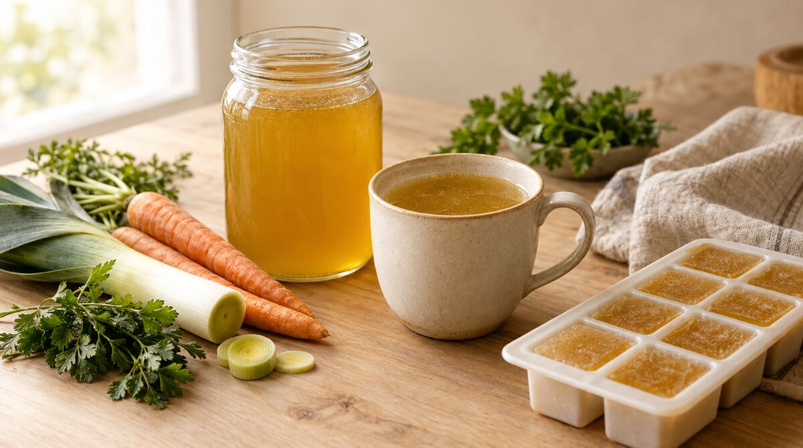
Eine warme Tasse Brühe tut gut, wenn Essen gerade zu viel ist – und ist Basis für Suppen, Risotto und Soßen. Ohne Salz gekocht, kannst du sie auch später fürs Baby verwenden.
Zwiebeln ungeschält halbieren (die Schale gibt Farbe), Gemüse grob schneiden.
Zwiebeln mit der Schnittfläche im Öl dunkelbraun anrösten.
Gemüse, Kräuter, Gewürze und Wasser zugeben und aufkochen.
Ohne Deckel 60 Minuten leise köcheln lassen.
Durch ein Sieb gießen und erst beim Verwenden salzen.
In 250-ml-Bechern oder als Würfel im Eiswürfelbehälter bis zu 6 Monate.
Gefroren direkt in den Topf geben und aufkochen.
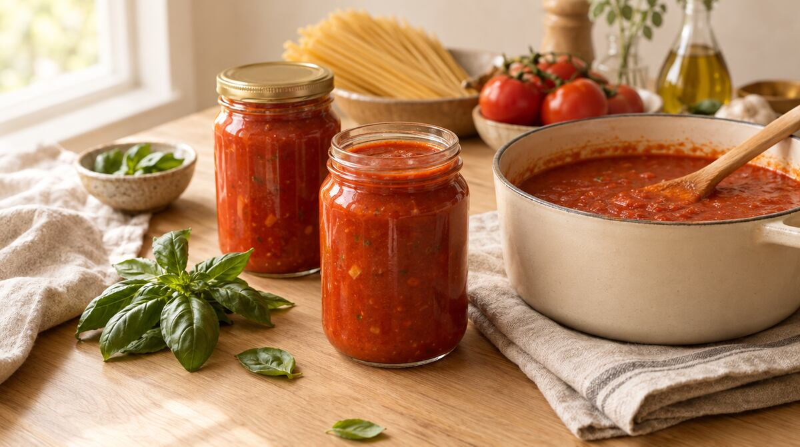
Vier Gemüsesorten stecken unsichtbar in einer Soße, die jeder mag. Für Nudeln, Pizza, Bällchen (E05) oder als Basis für ein schnelles Shakshuka.
Zwiebel, Möhren, Zucchini und Paprika grob würfeln, Knoblauch hacken.
Gemüse im Öl 8 Minuten weich dünsten.
Tomaten und Oregano zugeben und zugedeckt 25 Minuten köcheln.
Fein pürieren, mit Salz und Pfeffer abschmecken, Basilikum unterrühren.
In Portionen (je 250 ml) abfüllen.
In Bechern oder Beuteln bis zu 6 Monate.
Gefroren im Topf langsam erhitzen und kurz aufkochen.
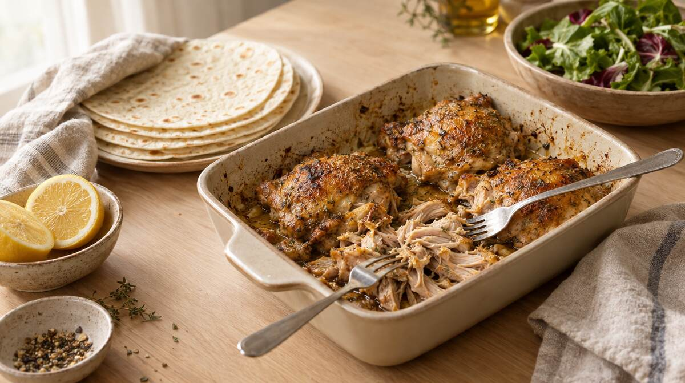
Ein Baustein für Dutzende schnelle Mahlzeiten: in Wraps, auf Brot, in Suppen oder Bowls. Schenkelfleisch bleibt auch nach dem Auftauen saftig.
Ofen auf 200 °C vorheizen.
Hähnchen mit Öl, Gewürzen, Zitronensaft und 1 TL Salz mischen.
In eine Form legen, Brühe angießen und abgedeckt 30 Minuten garen, dann offen 10 Minuten bräunen.
Gargrad prüfen (mindestens 2 Minuten über 70 °C).
Mit zwei Gabeln zerzupfen und mit dem Bratensaft mischen.
Mit etwas Bratensaft in flachen Beuteln (je 150 g) bis zu 3 Monate.
Im Kühlschrank auftauen und in der Pfanne mit einem Schuss Wasser erhitzen, bis es dampft.
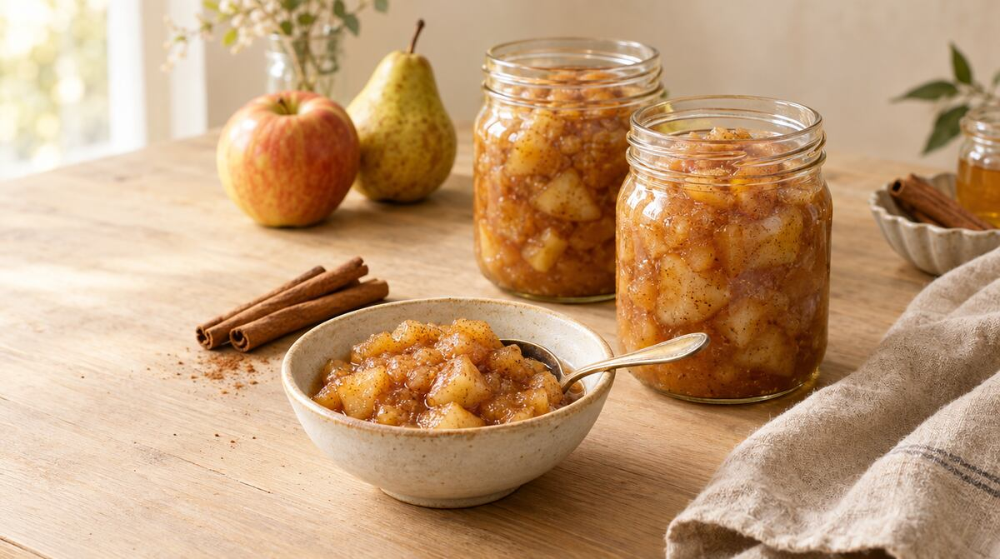
Fruchtig-süß ohne Zuckerzusatz. Passt auf Waffeln (F04), Haferbrei und Joghurt – und das Obst liefert Ballaststoffe und Wasser.
Äpfel und Birnen schälen, entkernen und würfeln.
Mit Wasser, Zitronensaft, Zimt und Vanille in einen Topf geben.
Zugedeckt 15 Minuten weich köcheln.
Grob zerdrücken oder fein pürieren.
Abkühlen lassen und portionieren.
In kleinen Bechern bis zu 6 Monate.
Über Nacht im Kühlschrank auftauen; kalt oder warm essen.
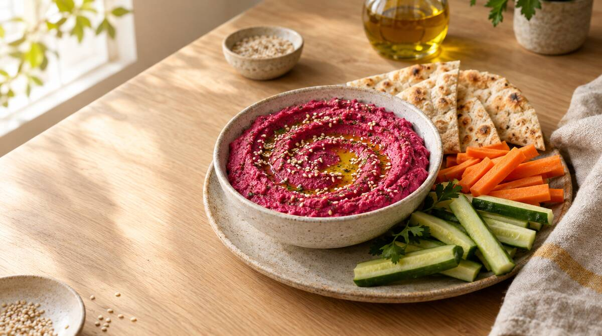
Kichererbsen und Tahin liefern Eiweiß, Calcium und Eisen. Mit Gemüsesticks oder Brot ist der Dip ein schneller Snack mit Substanz.
Kichererbsen abgießen, 4 EL Flüssigkeit auffangen.
Rote Bete grob würfeln.
Alle Zutaten mit 1 TL Salz im Mixer sehr fein pürieren, bei Bedarf Kichererbsenwasser zugeben.
Abschmecken.
In kleine Dosen füllen.
In kleinen Dosen mit etwas Öl bedeckt bis zu 2 Monate.
Über Nacht im Kühlschrank auftauen, gut durchrühren. Aufgetaut 3 Tage haltbar.
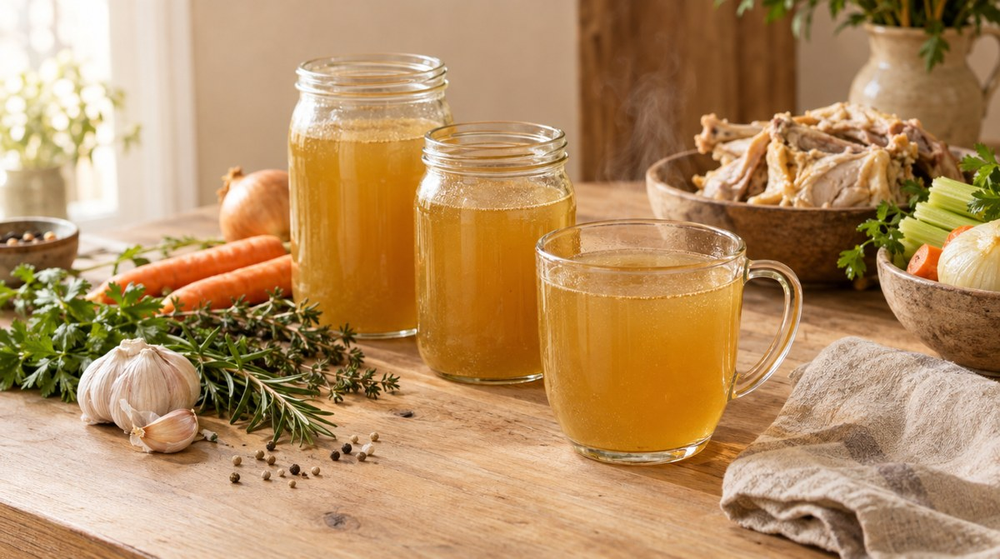
Eine kräftige Brühe ist die Basis für schnelle Suppen und Risotto. Warm getrunken liefert sie Flüssigkeit und Salz – angenehm in den ersten Stilltagen.
Hähnchenteile kalt abspülen. Suppengrün grob schneiden, Zwiebel mit Schale halbieren.
Alles mit Lorbeer, Pfeffer, Essig und Wasser in einen großen Topf geben und aufkochen. Schaum abschöpfen.
Bei kleinster Hitze 3 Stunden leise simmern lassen.
Durch ein feines Sieb gießen, leicht salzen.
Schnell abkühlen lassen (z. B. Topf ins kalte Wasserbad stellen) und das erstarrte Fett nach Wunsch abheben.
In Portionen (250–500 ml) oder in Eiswürfelformen bis zu 6 Monate.
Gefroren direkt im Topf erhitzen und aufkochen.
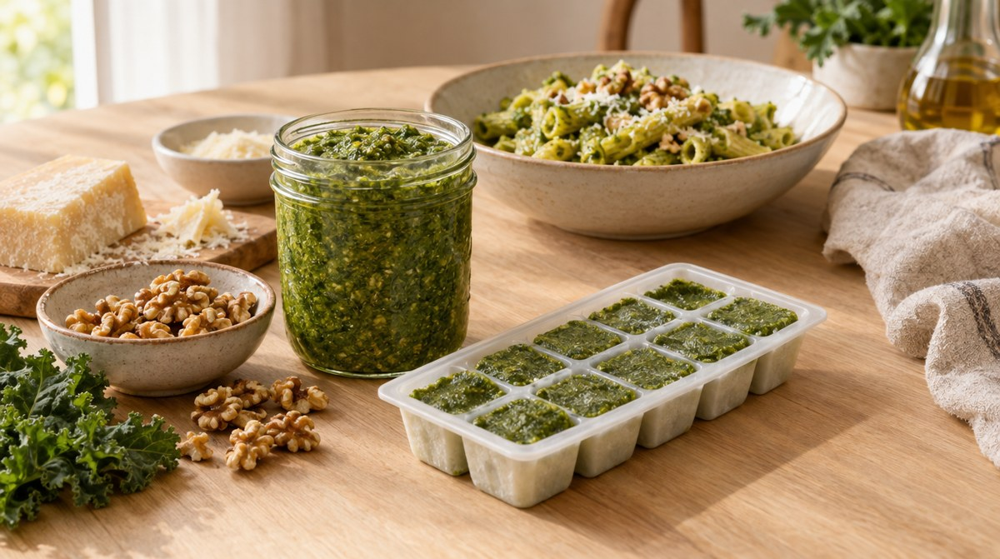
Ein Löffel Pesto macht aus Nudeln, Suppe oder Brot in Minuten eine Mahlzeit. Grünkohl bringt Calcium und Vitamin K, Walnüsse Omega-3-Fettsäuren.
Grünkohl waschen, harte Stiele entfernen, Blätter 1 Minute blanchieren und kalt abschrecken. Gut ausdrücken.
Walnüsse in einer trockenen Pfanne 3 Minuten anrösten.
Grünkohl, Walnüsse, Parmesan, Knoblauch und Öl im Mixer pürieren.
Mit Zitronensaft und Salz abschmecken.
In Eiswürfelformen portionieren, bis zu 3 Monate.
Würfel direkt unter heiße Nudeln rühren oder 30 Minuten im Kühlschrank antauen.
8 × Rinder-Ragù · 6 × Linsen-Kichererbsen-Eintopf · 6 × Hähnchen-Brokkoli-Auflauf · 8 Stücke Ofenhafer · 20 Energiebällchen
| Zeit | Ablauf |
|---|---|
| 0:00 | Ragù starten (C02): Fleisch anbraten, Gemüse dünsten, alles zugedeckt schmoren lassen. Es läuft jetzt zwei Stunden fast von allein. |
| 0:25 | Eintopf ansetzen (S05): Zwiebeln, Gewürze, Linsen, Tomaten und Brühe – 30 Minuten köcheln. |
| 0:35 | Energiebällchen (E01): Aprikosen einweichen, alles mixen, Kugeln formen und kalt stellen. |
| 0:55 | Ofenhafer (F03) mischen und bei 180 °C 35 Minuten backen. |
| 1:00 | Eintopf fertig abschmecken und in flache Dosen verteilen. |
| 1:10 | Auflauf (A02): Nudeln und Brokkoli kochen, Hähnchen braten, Käsesoße rühren, alles mischen. |
| 1:35 | Ofenhafer herausnehmen, Auflauf bei 200 °C 20 Minuten überbacken. |
| 2:10 | Ragù zerzupfen und abschmecken. Alles abkühlen lassen. |
| 2:30 | Portionieren, beschriften, einfrieren – zuerst, was schon am kältesten ist. Küche aufräumen. |
Mengen für alle fünf Rezepte zusammen. Packungsgrößen aufrunden; die Kennungen zeigen, wofür du die Zutat brauchst.
Aus dem Vorrat prüfen: Olivenöl, Rinderbrühe, Lorbeerblätter, getrockneter Thymian, Kreuzkümmel, Paprikapulver edelsüß, Zimt, Gemüsebrühe, Rapsöl, Muskatnuss, Honig.
6 × Butter-Chicken · 6 × Minestrone · 6 × Shepherd's Pie · 12 Blaubeer-Muffins · 20 Ofen-Falafel
| Zeit | Ablauf |
|---|---|
| 0:00 | Alle Süßkartoffeln schälen (für Pie und Falafel) und zusammen in einem großen Topf weich kochen. |
| 0:10 | Hähnchen für das Butter-Chicken (C01) in Joghurt und Gewürzen marinieren. |
| 0:20 | Minestrone (S04) ansetzen und köcheln lassen – Nudeln nicht dazugeben. |
| 0:35 | Muffinteig (F01) rühren und bei 180 °C 22 Minuten backen. |
| 0:45 | Butter-Chicken kochen. |
| 1:05 | Muffins herausnehmen. Falafel (E06) mixen, formen und bei 200 °C 25 Minuten backen. |
| 1:15 | Hackfüllung für den Shepherd's Pie (A01) braten, Süßkartoffeln zu Püree stampfen. |
| 1:35 | Pie in Formen schichten – er wird ungebacken eingefroren. Falafel herausnehmen. |
| 1:45 | Minestrone abschmecken. Alles abkühlen lassen, dann portionieren, beschriften und einfrieren. |
Mengen für alle fünf Rezepte zusammen. Packungsgrößen aufrunden; die Kennungen zeigen, wofür du die Zutat brauchst.
Aus dem Vorrat prüfen: Garam Masala, Kurkuma, Olivenöl, Gemüsebrühe, getrocknete italienische Kräuter, Rapsöl, Rinderbrühe, Honig, Kreuzkümmel, gemahlener Koriander.
Je Woche rund 14 warme Portionen – genug für ein warmes Essen am Tag für zwei Erwachsene. Die kleine Kennung verweist aufs Rezept, ×2 bedeutet zwei Portionen.
| Woche | Warm aus der Truhe | Frühstück | Snacks | Frisch dazu |
|---|---|---|---|---|
| Woche 1 Ankommen | Rinder-Ragù mit Möhren für Pasta C02 ×2 Marokkanischer Linsen-Kichererbsen-Eintopf S05 ×4 Hähnchen-Brokkoli-Nudelauflauf A02 ×2 Mildes Butter-Chicken mit Joghurt C01 ×2 Minestrone mit weißen Bohnen S04 ×2 Shepherd's Pie mit Süßkartoffel-Haube A01 ×2 | Apfel-Zimt-Ofenhafer in Stücken F03 Blaubeer-Quark-Muffins mit Vollkorn F01 | Aprikosen-Cashew-Energiebällchen E01 Süßkartoffel-Kichererbsen-Falafel aus dem Ofen E06 | Obst, Joghurt, Brot, Rohkost |
| Woche 2 Einpendeln | Rinder-Ragù mit Möhren für Pasta C02 ×4 Hähnchen-Brokkoli-Nudelauflauf A02 ×4 Mildes Butter-Chicken mit Joghurt C01 ×4 Minestrone mit weißen Bohnen S04 ×2 | Apfel-Zimt-Ofenhafer in Stücken F03 Blaubeer-Quark-Muffins mit Vollkorn F01 | Aprikosen-Cashew-Energiebällchen E01 Süßkartoffel-Kichererbsen-Falafel aus dem Ofen E06 | Salat, Obst, Quark |
| Woche 3 Ersten Ausflug wagen | Rinder-Ragù mit Möhren für Pasta C02 ×2 Marokkanischer Linsen-Kichererbsen-Eintopf S05 ×2 Minestrone mit weißen Bohnen S04 ×2 Shepherd's Pie mit Süßkartoffel-Haube A01 ×4 Gezupftes Ofenhähnchen für Wraps & Bowls B03 – in Wraps ×4 | Vollkorn-Waffeln zum Toasten F04 Frühstücks-Burritos mit Rührei, Bohnen & Käse F02 | Haferriegel mit Apfel & Leinsamen E02 Brokkoli-Käse-Taler aus dem Ofen E03 | Tortillas, Gurke, Tomate |
Nimm abends die Frühstücksportion aus der Truhe in den Kühlschrank. Snacks wie Energiebällchen und Falafel kannst du direkt gefroren in eine Dose am Stillplatz legen.
| Woche | Warm aus der Truhe | Frühstück | Snacks | Frisch dazu |
|---|---|---|---|---|
| Woche 4 Kleine Routinen | Süßkartoffel-Erdnuss-Suppe mit Tomate S01 ×6 Schmorhähnchen in Tomate mit Paprika & Oliven C04 ×4 Hähnchen-Gemüse-Bällchen aus dem Ofen E05 mit Tomatensoße mit verstecktem Gemüse B02 ×4 | Vollkorn-Waffeln zum Toasten F04 Frühstücks-Burritos mit Rührei, Bohnen & Käse F02 | Haferriegel mit Apfel & Leinsamen E02 Brokkoli-Käse-Taler aus dem Ofen E03 | Nudeln, Reis frisch |
| Woche 5 Mehr Hunger | Rindfleisch-Graupen-Eintopf mit Wurzelgemüse S02 ×6 Linsen-Champignon-Ragout nach Stroganoff-Art C05 ×4 Gnocchi-Auflauf mit Tomate & Mozzarella A05 ×4 | Herzhafte Käse-Schnittlauch-Scones F05 Dinkel-Saaten-Brötchen F06 | Spinat-Feta-Teigtaschen E04 Bananen-Erdnuss-Kekse ohne Zuckerzusatz E07 Rote-Bete-Hummus B05 | Brot, Gemüsesticks |
| Woche 6 Übergang in den Alltag | Lachs-Brokkoli-Soße für Nudeln C06 ×4 Hähnchen-Bohnen-Enchiladas A04 ×4 Pastinaken-Kartoffel-Suppe mit Apfel S03 ×6 | Herzhafte Käse-Schnittlauch-Scones F05 Dinkel-Saaten-Brötchen F06 | Spinat-Feta-Teigtaschen E04 Bananen-Erdnuss-Kekse ohne Zuckerzusatz E07 Rote-Bete-Hummus B05 | Nudeln, Obst, Joghurt |
Wochen 1–3 kommen aus den beiden Kochtagen. Die Gerichte für Wochen 4–6 kochst du in den letzten Schwangerschaftswochen an normalen Abenden doppelt – oder gibst sie Helfern mit der Liste auf Seite 138. Nichts muss perfekt sein: Ein Tag mit Brot und Rohkost ist auch ein guter Tag.
Bitte bringt lieber eine Mahlzeit als Blumen – am besten in einer Dose, die wir behalten dürfen.
Wir mögen: Suppen, Eintöpfe, Aufläufe, Currys mild gewürzt, Obst, frisches Brot.
Bitte vorher kurz schreiben – wenn das Baby schläft, schlafen wir oft auch.
Ihr wollt mehr helfen? Spülmaschine, Wäsche oder ein Einkauf sind Gold wert.
| Datum | Wer? | Was? |
|---|---|---|
| Gericht | Datum | Portionen | Gegessen |
|---|---|---|---|
Handlungsempfehlungen zur Ernährung in der Stillzeit, u. a. zu Fisch, Jod, Alkohol, Koffein und Energiebedarf. gesund-ins-leben.de
Referenzwerte für die Nährstoffzufuhr in der Stillzeit; Empfehlungen zur ausgewogenen Ernährung. dge.de
Verbrauchertipps zur Küchenhygiene, zum Abkühlen und Aufwärmen (u. a. Reis) sowie zu Honig im ersten Lebensjahr. bfr.bund.de
Hinweise zum Einfrieren, Auftauen und zur Lagerdauer von Lebensmitteln. bzfe.de
Stillen und Säuglingsernährung in Deutschland (BfR/DGE-Ernährungsbericht).
Stand der Informationen: Oktober 2026. Empfehlungen können sich ändern; maßgeblich sind die aktuellen Veröffentlichungen der genannten Stellen und die Absprache mit deiner Hebamme oder Ärztin.
Band 1 · Was darf ich essen? – 70 Rezepte für die Schwangerschaft.
Band 2 · Vorkochen fürs Wochenbett – 55 Rezepte zum Einfrieren.
Band 3 · Kraft-Küche fürs erste Jahr – 65 schnelle Rezepte für Mamas mit Baby.
Alle Bände auf beequeenkitchen.com